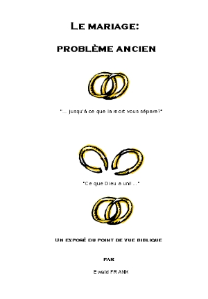

|
 |
Titre
original de louvrage: Auteur: Traduit de lallemand. Tout droit de reproduction,même partiel, est réservé. Editeur |
|
|
TABLE DES MATIERES |
| Les serviteurs de Dieu | |
| Retour à la Parole Retour à Dieu | |
| Les Siens écoute Sa Parole | |
LE MARIAGE: PROBLEME ANCIEN
Un exposé
du point de vue biblique
par Ewald Frank
INTRODUCTION
A cause de certains événements, il est devenu nécessaire, comme le dit Paul à lEglise de Corinthe, de répondre aux questions au sujet desquelles vous mavez écrit. Le thème tout particulier du mariage doit donc être encore une fois éclairé à fond.
Comme au sujet de toutes les autres doctrines: les sortir du domaine des discussions et les exposer par de claires déclarations bibliques, en les plaçant au-dessus de tout doute; ainsi en sera-t-il, avec laide de Dieu, pour ce thème très compliqué mais si important aussi longtemps que nous vivrons sur la terre. Etant donné que les crises surgissant entre couples sont aussi anciennes que le mariage même, elles ont préoccupé les gens du temps de Moïse, du temps de notre Seigneur et des apôtres, et de tous les temps. Mais ceci se rapporte tout spécialement au temps présent. Nous trouvons les réponses à toutes les questions et problèmes reliés à ce sujet dans les Saintes Ecritures. Il ny a malheureusement pas de chapitre où les questions et réponses sur ce thème complexe seraient rassemblées et traitées entièrement, comme nous le désirerions. Les passages traitant de cela, comme pour dautres thèmes, sont dispersés et ne forment quelquefois quune partie des réponses ici et là; ils doivent donc être cherchés pour pouvoir être mis ensemble.
Nous vivons dans la dernière période de lEglise, dans laquelle, par la révélation de lEsprit, tout a été révélé et doit être ramené à létat originel, dans lordre divin. Notre Père céleste se soucie du bien-être des Siens, et sur ce thème Il ne nous a pas laissé dans lincertitude. Il sait combien de coeurs sont dans la peine à cause du manque de paix dans les familles, et parce quIl veut en préserver Ses enfants pour quils puissent Le servir dun coeur joyeux et dune âme légère, Il a également donné des indications dans ce domaine, comme un bon Père.
La prédication «Mariage et Divorce», que William Branham a donnée le 21 février 1965, est en relation avec les Saintes Ecritures et constitue le fondement de cette publication. Comme Paul au commencement, il a reçu directement du Seigneur la charge dexposer, conformément aux Ecritures, le thème du «Mariage et Divorce». Selon ses propres paroles, le contexte de ce thème lui fut donné avec les passages bibliques sy rapportant. Il insista, disant que cette révélation quil devait apporter à lEglise faisait partie intégrante des «mystères» qui avaient été révélés lors de louverture des Sceaux. Comme on le sait, une «révélation» est quelque chose que lon ne connaissait pas auparavant. Cependant William Branham a hésité à exposer ce thème, parce quil craignait dêtre mal compris, et même éventuellement de provoquer des séparations et dautres choses. Dans sa prédication Le troisième Exode du 30 juin 1963, il dit à plusieurs reprises que quelque chose lui parla. Citation: «Enregistre cette prédication sur le mariage et le divorce. Vous voyez? Si le Seigneur le permet, si cela reste ainsi sur mon coeur, et si le Seigneur me montre encore quelque chose de plus sur ce sujet, je pense que je ferai cet enregistrement». Il ajouta même: «Ils pourraient faire entendre cette bande au juge de paix et aux magistrats afin quils sachent ce que le Seigneur dit au sujet du mariage et du divorce». [Série 3, N° 3, p.5]
Ce nest quaprès que le Seigneur lui eut commandé daller à nouveau dans les montagnes, où une fois de plus le Seigneur descendit dans la nuée surnaturelle et lui parla du mariage et du divorce, quil apporta à son église de Jeffersonville le message qui lui avait été révélé. Citation: «Quelque chose me dit: Va dans la montagne et je te parlerai, Toute la ville le regarda: Cétait une journée radieuse où il ny avait aucun nuage, à part ce grand nuage de couleur ambrée suspendu là et ayant la forme dun entonnoir, puis remontant et sétalant. Chers amis, cest à ce moment-là que me fut révélé ce que je vais vous dire maintenant même, cest pourquoi ne le manquez pas» [Mariage et Divorce p. 40, § 252-258]
Aujourdhui se renouvelle ce qui sest toujours passé: On aimerait volontiers entendre un prophète, mais en même temps on sattend à ce quil dise ce que nos oreilles sont habituées à entendre, cest-à-dire tout ce que les autres ont déjà enseigné. Une idée professée depuis longtemps ou une idée qui semble appropriée et être très religieuse peut cependant être profondément non biblique. Les 400 hommes se trouvant sous lesprit de mensonge, du temps dAchab, étaient des prophètes reconnus, de vrais prophètes de lAssemblée dIsraël. Par contre Michée était un prophète de Dieu. Cela fait une différence énorme. Notre Seigneur Jésus a prédit que dans les derniers temps se lèveraient beaucoup de faux prophètes. Mais Il a aussi confirmé ce qui est promis dans le prophète Malachie, quun prophète Elie viendrait pour rétablir toutes choses (Mat. 17.11; Actes 3,19-21), avant que le grand et terrible jour de lEternel narrive. La Parole est toujours venue aux prophètes, et ceux-ci pouvaient rendre témoignage du jour, du mois et de lannée où ils Lavaient reçue (Aggée 2.1,10,18 et autres). Ce qui est écrit est encore valable aujourdhui: Or le Seigneur, lEternel, ne fera rien, quil ne révèle son secret à ses serviteurs les prophètes (Amos 3.7; Apoc. 10.7, et autres).
Le messager venu appeler Michée, dit au serviteur envoyé par Dieu: que ta parole donc, soit, je te prie, comme celle de lun deux, et annonce du bien (2 Chr. 18.12,13). Car Sédécias, le prophète principal au milieu deux, sétait fait des cornes de fer, il avait prophétisé puissamment et sétait écrié: Ainsi dit lEternel! (v. 10). Mais ce nétait pas Ainsi dit lEternel des armées, mais bien Ainsi dit Sédécias. Lorsque tout dabord lhomme de Dieu commença par dire ce que tous les autres avaient dit, même Achab, le roi apostat, reconnut que quelque chose sonnait faux et il commanda, et même conjura le prophète de ne me dire que la vérité au nom de lEternel (v. 15). Là-dessus Michée prononça devant les deux rois, Josaphat et Achab, la révélation qui lui avait été donnée. Car, bien quayant entendu les 400 prophètes, Josaphat demanda sil ny en avait pas encore un autre par lequel Dieu ait parlé. La révélation disait: Cest pourquoi écoutez la parole de lEternel. Jai vu lEternel assis sur son trône, et toute larmée des cieux se tenant à sa droite et à sa gauche (v. 18).
Seul Michée avait la Parole de lEternel, le vrai Esprit de Dieu, et le AINSI DIT LETERNEL; les autres prophètes avaient un esprit de mensonge, relié à une opinion religieuse. Tant quun homme prétendument envoyé par Dieu publie la même chose que ce que disent, ou ont dit tous les autres, Dieu na pas parlé par lui. Ce nest que lorsquil fait connaître la révélation reçue de Dieu, laquelle se différencie toujours de lenseignement général et traditionnel mais cependant est toujours en accord avec le témoignage des Saintes Ecritures, alors cest lEternel qui a parlé.
Frère Branham avait les passages bibliques correspondants que le Seigneur lui avait montrés, et il les donnait chaque fois dans le contexte juste, montrant les rapports existants; cest pourquoi les observateurs négligeants lappelaient un prophète demeuré pris dans lAncien Testament. Mais malgré les comparaisons tirées de lAncien Testament, sa prédication était clairement dirigée vers lEglise du Seigneur de ces derniers temps. Le Dieu de lAncien Testament est cependant encore et toujours le Dieu du Nouveau Testament. Il est toujours le même, hier, aujourdhui et éternellement, et cette Parole demeure: Toute écriture est inspirée de Dieu, et utile pour enseigner, pour convaincre, pour corriger, pour instruire (2 Tim. 3.16).
Lorsquil est dit dans le Nouveau Testament: Comme le dit lécriture ou Comme il est écrit ou Afin que saccomplisse tout ce qui est écrit , cest toujours de lAncien Testament dont il est question. En effet le Nouveau Testament nétait quen gestation. Pendant les deux premiers siècles, les évangiles et les épîtres des apôtres furent mis en circulation dans les églises. Paul mentionne ceci dans son épître aux Colossiens: Et quand la lettre aura été lue parmi vous, faites quelle soit lue aussi dans lassemblée des Laodicéens, et vous aussi lisez celle qui viendra de Laodicée (Col. 4.16).
Ce nest quà la fin du troisième et au commencement du quatrième siècle quEusèbe et Athanase rassemblèrent ces écrits en un seul livre, que nous connaissons sous le nom de Nouvau Testament, lequel est désigné comme canon, ce qui veut dire norme ou règle. Tant les prédications du Seigneur que celles des apôtres ne résultaient à lorigine uniquement que des textes de lAncien Testament. Et il leur dit: Ce sont ici les paroles que je vous disais quand jétais encore avec vous, quil fallait que toutes les choses qui sont écrites de moi dans la loi de Moïse, et dans les prophètes, et dans les psaumes, fussent accomplies. Alors il leur ouvrit lintelligence pour entendre les écritures (Luc 24.44,45). Notre Seigneur sécria dans Jean 7.38: Celui qui croit en moi selon ce que dit lécriture . Luc rend témoignage que Paul leur exposait la vérité, en rendant témoignage du royaume de Dieu, depuis le matin jusquau soir, cherchant à les persuader des choses concernant Jésus, et par la loi de Moïse et par les prophètes (Actes 28.23). Depuis Matthieu 1 et dans tous les évangiles, comme avant lévénement de Pentecôte, et naturellement le jour de Pentecôte (Actes 2), comme lors de chaque pas fait en avant dans lhistoire du salut, ou dans chaque enseignement biblique des épîtres des apôtres et cela jusqu'à celui de Jude, les passages correspondants de lAncien Testament ont été cités.
Les doctrines non reliées à la loi de Dieu sont les doctrines de linique, comme le dit Paul au chapitre 2 de 2 Thessaloniciens. Dieu est lié à Sa Parole pour toujours, et Il lie également les Siens à cette Parole afin quils expérimentent réellement la liberté. Ceci convient tout à fait à la prédication du Nouveau Testament, et le fait que frère Branham emploie des exemples que le Seigneur Lui-même a donné et qui viennent de la vie pratique de lAncien Testament, est tout à fait caractéristique. Afin que lhomme de Dieu soit accompli et parfaitement accompli pour toute bonne oeuvre (2 Tim. 3.17).
Une doctrine ne peut être biblique que lorsque les deux, lAncien et le Nouveau Testament, sont pris en considération et amenés à lharmonie. Cest pour cette raison que les confessions chrétiennes sont sur le chemin de lerreur, parce quelles se sont détachées du fondement de lAncien Testament. Dans sa prédication Mariage et Divorce, lhomme de Dieu nous surprend sans cesse par ses comparaisons inhabituelles quil naurait, comme nous le savons tous, pas utilisées de lui-même. Dans lhumilité qui lui avait été donnée, il dit: «Parce que cest une question biblique, il doit y avoir aussi une réponse biblique». Cependant, les réponses bibliques quil donne ne conviennent pas à la représentation moderne que nous en avons. Lesprit de ce temps règne partout sous la bannière de légalité. La pleine émancipation est à la mode, et malheur à celui qui se réclame des déclarations de la Bible quil appelle vieux jeu et dépassées.
RECU DU SEIGNEUR
Dans lintroduction de sa prédication frère Branham mentionne (p.5, § 25) 10 000 cas dans lesquels quelque chose lui a été révélé et annoncé à lavance, des choses qui se sont toutes accomplies. Il laissa son Assemblée, qui avait entendu de ses oreilles et vu ces choses de ses propres yeux pendant toutes ces années, confirmer cela par un puissant Amen!. Ensuite il montra que les deux pensées doctrinales qui prévalent, lesquelles sont tout à fait opposées lune à lautre, sont fausses du point de vue biblique, bien quelles soient partout prêchées et crues. Citation: «Si cest ainsi, nous avons deux écoles de pensée au sujet du mariage et du divorce. Lune dit quun homme ne peut être marié quune seule fois, à moins que sa femme ne soit morte. Cest une des questions. Mais si vous suivez cette voie-là vous passez par-dessus bord. Lautre dit: Oh, si le mari ou la femme (lun ou lautre) a commis adultère, lautre peut le répudier et se remarier. Mais dans cette voie aussi vous passez par-dessus bord» (p. 9, § 50).
Quelquefois il est déplaisant de faire mention dévénements tout à fait privés, mais Dieu qui se soucie de notre bien-être dune manière si paternelle, le fait aussi pour nos relations entre humains, et il a fait écrire pour toujours Ses enseignements, Ses commandements et Ses interdictions. Il est Celui qui sait le mieux de quoi nous sommes formés, ce qui est bon pour nous, et comment la transgression des lois concernant notre corps se répercutent sur notre vie spirituelle. Cest la désobéissance manifestée dans nos actions corporelles, qui finalement causera des dommages à notre âme et nous séparera de notre Dieu. Cest pourquoi, pour un enfant de Dieu, tout ce qui se trouve dans les Ecritures est obligatoire. En donnant la loi, Dieu a placé devant notre choix la vie et la mort, la malédiction et la bénédiction la vie en suivant Sa Parole dans lobéissance, la mort en la transgressant par la désobéissance. Notre Sauveur, Lui qui a pris notre place, a été obéissant même jusqu'à la mort de la croix (Phil. 2.8), afin de nous racheter de la désobéissance dAdam (Rom. 5.19 et autres). Notre Rédempteur dit: mais qui désobéit au Fils ne verra pas la vie, mais la colère de Dieu demeure sur lui (Jean 3.36). Pierre écrit: Comme des enfants dobéissance, ne vous conformant pas à vos convoitises dautrefois (1 Pier. 1.14). Il nexiste que «deux paires de souliers»: lincrédulité et la désobéissance, et la foi et lobéissance. Quelle paire de souliers portons-nous? Il ne sagit pas ici de penser aux autres, mais bien de nous laisser interpeller tout à fait personnellement par la Parole de Dieu.
Tous les passages bibliques se rapportant à une chose doivent être mis ensemble. Celui qui prend pour lui-même un seul passage de la Bible, sans considérer les autres, fait violence à la Parole de Dieu. Cette Parole nest pas là pour donner raison à qui que ce soit et encore moins pour appuyer notre propre interprétation. Nous vivons pour donner raison à Dieu et nous soumettre à chacune de Ses Paroles. Par exemple, celui qui ne discerne pas et ne considère pas quelle est la parole adressée à lhomme, et quelle est celle adressée à la femme na pas réellement compris la chose, ou cest peut-être parce quil ne veut pas du tout le savoir correctement. Toutefois, quand Dieu dit il, cest bien à lhomme quIl pense, et sIl dit elle il sagit de la femme. Dieu pense toujours ce quIl dit, et Il dit ce quIl pense.
CEST AINSI QUE CELA COMMENCA
Cest au commencement, cest-à-dire dans le livre de la Genèse (qui veut dire origine, commencement) que frère Branham va tout dabord, là ou se trouve lorigine de tout mal, là où se trouve la chute dans le péché, et à cela est liée la première désobéissance, la première transgression de la Parole, la première séduction, le premier adultère, et ainsi de suite. Le frère expose comment Eve était en Adam lors de la création du corps spirituel (Gen. 1), et comment au 2ème chapitre, par une action ayant eu lieu sur la terre, Eve fut sortie dAdam et lui fut présentée. Ainsi est présenté devant nos yeux depuis le commencement lhistoire du salut à lintérieur de lhistoire de lhumanité: LEpouse de Christ était déjà dans le Sauveur alors quIl se trouvait dans un corps spirituel, mais Elle ne sortit de Lui que lorsquIl apparut dans un corps de chair et accomplit la rédemption à la croix de Golgotha.
Dans cette prédication frère Branham dit ensuite quau commencement il ny avait dans la création quune paire de chaque genre, cest-à-dire un mâle et une femelle. Il fait ressortir la pensée que la création originelle nétait pas encline au péché et ne pouvait pas être séduite (p. 23). Cest la raison pour laquelle lennemi sempara de la femme, qui nétait pas dans la création originelle en tant que personne indépendante au côté dAdam mais qui fut au contraire tirée plus tard de lui. Le commandement suivant fut donné par Dieu lEternel à Adam, alors quEve était encore en lui: Tu mangeras librement de tout arbre du jardin; mais de larbre de la connaissance du bien et du mal, tu nen mangeras pas; car, au jour que tu en mangeras, tu mourras certainement (Gen. 2.16,17). Dieu avait parlé à Adam, mais lennemi, lui, choisit Eve comme partenaire de conversation, et il lembrouilla dans des arguments sur ce que Dieu avait dit. Aujourdhui encore lennemi emploie les même paroles par la bouche de beaucoup de personnes: Dieu aurait-Il pensé cela? et Dieu aurait-il réellement dit ?, et déjà sensuit laltération des Paroles de Dieu. Dieu avait pensé à un arbre particulier dont le fruit ne devait pas être mangé, larbre de la connaissance; lennemi, lui, parla de tous les arbres. En effet il demeura sur le thème, mais non dans la vérité.
Lors du premier acte de la création, les deux, mâle et femelle, ne constituaient quune forme: Et Dieu créa lhomme à son image; il le créa à limage de Dieu; il les créa mâle et femelle (Gen. 1.26-29). Bien que toute la création eut été achevée et estimée très bonne, et que Dieu se reposa le septième jour de toute Son oeuvre après avoir béni et sanctifié ce septième jour (Gen. 2.1-3), il est dit au chapitre 2.5b: et il ny avait pas dhomme pour travailler le sol .Ce ne fut quaprès que son corps de chair ait été formé, quAdam put être plongé dans le sommeil et quEve put être retirée de lui. Dans ce corps de chair naturel, lhomme pouvait accomplir tous les travaux de la terre, mais cest également dans ce corps quil tomba; cest pourquoi lEternel dut venir dans ce corps naturel pour nous sortir de la chute du péché et nous racheter. Le Sauveur fut rendu semblable en toutes choses à ceux qui devaient être sauvés (Héb. 2.17), afin que lors de lachèvement ils puissent devenir semblables à Lui (1 Jean 3.2). Cest parce que le premier engendrement avait eu lieu par la séduction du serpent que lhumanité engendrée de manière charnelle est tombée sous la domination du méchant. Caïn était un fils du méchant (1 Jean 3.12). Dans le notre Père nous prions: délivre-nous du malin (Mat. 6.13b). Le Seigneur des Cieux devait venir dans un corps humain par lengendrement de lEsprit, afin de nous libérer de la chute du péché dune manière réelle, et nous racheter de la puissance du méchant.
Dès le moment où Eve se laissa entraîner par les arguments du serpent, elle se trouva sous lautorité de Satan. Elle amena ensuite Adam sous la même influence dans laquelle elle se trouvait et lentraîna dans la chute du péché, par la transgression dun commandement pourtant bien clair. Il se trouve que toute femme influençant son mari contre la Parole de Dieu est, comme Eve, tombée sous linspiration du méchant. Il est évident que, comme autrefois, de telles discussions se font avec des arguments sur ce que Dieu a dit. Dans une telle situation, sans que les femmes ne le remarquent, lennemi tord la Parole de Dieu dans leur tête et sur leurs lèvres. Satan se sert toujours de la Parole de Dieu dans lintention de tromper; il vint aussi à notre Seigneur avec le il est écrit, car ce nest quainsi quil peut faire tomber des enfants de Dieu. Tout mensonge est en fait une vérité présentée sens dessus dessous, cest-à-dire tordue. Nous devons donc suivre lexemple de notre Seigneur et le rencontrer avec le mais il est aussi écrit. Satan prend des citations de la Bible, isolées et hors de leur contexte, pour tenter les croyants, mais nous, nous prenons toute la Parole pour résister à ce tentateur.
LA FIN DU COMMENCEMENT
Cest avec une grande colère que lEternel Dieu a réagi à la chute dans le péché. Il maudit le serpent, qui perdit aussitôt la parole et sa forme originelle. Il pouvait auparavant parler et se tenir debout, mais dès ce moment il dut ramper sur le sol en tant que reptile. Eve na pas été maudite, mais punie, et cela uniquement dans le but quelle se souvienne de la séduction, elle devait mettre ses enfants au monde dans la douleur. Dieu na pas placé cette punition sur la bouche, mais bien là où elle devait être, cest-à-dire sur le sein maternel. Le fait quils couvrirent leur honte avec des feuilles de figuier non sous lombre dun pommier, duquel la Bible ne parle nullement éclaire tout à fait ce qui sest passé. Adam ne fut pas davantage maudit, mais la malédiction tomba sur le sol quil devait cultiver. Lui-même devait manger son pain à la sueur de son front. Le reproche que lui fit le Seigneur était: Parce que tu as écouté la voix de ta femme (Gen. 3.17).
Ce qui a été dit à Adam et Eve depuis la chute dans le péché est également valable pour les croyants, du fait quils se trouvent dans le même état corporel pendant leur pèlerinage sur la terre. Les femmes croyantes mettent également au monde leurs enfants dans la douleur, et dans leurs travaux corporels les hommes ont toujours à laisser couler la sueur de leur front. Ce nest quavec la transmutation que la délivrance des corps trouvera son accomplissement. Jusqu'à ce moment-là les contraintes corporelles sont les mêmes pour les croyants que pour les incrédules tous ont les mêmes besoins et les mêmes maux.
Après que le malheur fut entré, lEternel Dieu donna aussitôt la promesse du salut, cest-à-dire que la Semence allait venir au travers de la femme pour écraser la tête du serpent. Satan a introduit sa semence par Eve, mais Dieu est venu avec Sa Semence au travers de Marie. En sadressant à ladversaire Dieu dit: Et je mettrai inimitié entre toi et la femme, et entre ta semence et sa semence. Elle te brisera la tête, et toi tu lui briseras le talon (Gen. 3.15).
En ce qui concerne la chute dans le péché frère Branham poursuit en disant que les choses du commencement était passées, cest-à-dire les choses auxquelles notre Seigneur Jésus se rapporte dans Matthieu, quand Il dit: mais au commencement il nen était pas ainsi (Mat. 19.8). Après la chute une nouvelle alliance était nécessaire, dit lhomme de Dieu, laquelle mit fin à légalité de lhomme et de la femme. Citation: «Remarquez ceci maintenant. Après le commencement, après le commencement, après que le temps eut commencé (avant, cétait léternité), cétait fini. Remarquez quaprès la chute causée par Eve, après la chute il y eut besoin de faire une nouvelle alliance. Vous allez vous achopper à cela, mais je vais vous donner les passages de lEcriture qui prouveront que cest la vérité. Remarquez ceci, Jésus avait dit: Dieu, au commencement, avait fait un couple de chaque espèce. Mais ensuite après la chute, nous passons de lautre côté. Dans la première alliance ils étaient égaux, mais après la chute une autre alliance fut faite. Maintenant la femme navait plus la domination avec lhomme. Chacun deux dut avoir une alliance séparée» (p. 26, § 155, 156).
Légalité, cest-à-dire la même position pour lhomme et la femme, était passée, et Adam fut établi par Dieu Lui-même comme seigneur de sa femme. et lui dominera sur toi (Gen. 3.16). De même pour les femmes croyantes du Nouveau Testament rien na changé, même si nombre dentre elles disent ouvertement ou à mi-voix: «Cela vous plairait ainsi!». Paul écrit: Mais je veux que vous sachiez que le chef de tout homme, cest le Christ, et que le chef de la femme, cest lhomme, et que le chef de Christ, cest Dieu (1 Cor. 11.3). Ceci est encore et toujours lordre divin pour les croyants. Une femme croyante véritable, qui occupe correctement sa place, se prêtera de tout coeur à son rôle. Si elle se débarrasse de lautorité de lhomme, bibliquement parlant elle supprime sa tête, et se trouve au plein sens du mot sans tête.
Avec la chute dans le péché le commencement auquel se réfère Jésus est passé. Citation: «Remarquons ce que Jésus a dit au sujet de cette Parole: Il nen était pas ainsi au commencement. Ainsi ce nest pas au commencement, mais après le commencement, et maintenant il y a une double alliance. Premièrement il y avait juste une alliance. Adam et Eve étaient égaux, un homme, une femme. Mais la femme pécha et quarriva-t-il? Cela les précipita tous dans la mort et Dieu dut faire une alliance en tenant compte de cela, une autre alliance. Elle se trouve ici même, dans Genèse 3.16. Il a fait une autre alliance» (p. 27, § 160).
Oui, cest ainsi! Ensuite frère Branham nous conduit à quelque chose qui, au premier abord nous semble inconcevable; après plus ample considération, après ce choc salutaire, cela agit pour notre bien et cette citation se laisse mettre à sa place. Citation: «Vous voyez, après le commencement quelque chose dautre fut introduit. Ce que je vais vous dire va vous choquer Quand la double alliance fut faite pour lhomme et la femme par le moyen du sexe (Cétait une alliance totalement différente. Ce nétait pas lalliance originelle, mais une autre alliance), quest-ce qui fut introduit? La polygamie partout! Cest la seconde alliance: un mâle et de nombreuses femelles» (p. 28, § 164 & 165).
Comme nous lavons déjà fait savoir, cela nous a choqué au delà de toute mesure, car nous nattendions pas cela. Cependant il ne sagit pas ici dintroduire la polygamie, mais bien détablir la correction biblique. Frère Branham expose daprès lEcriture, et enseigne ce que la Parole de Dieu témoigne: cest-à-dire que la position de la femme est différente de celle de lhomme.
Sur cette base le prophète continue avec tout le sérieux de Dieu, et cela se remarque même dans sa voix. Citation: «Remarquez ceci. Ne le manquez pas maintenant. Gardez-le profondément dans votre coeur: Aucune de ces femmes ne pouvait avoir plus dun mari. Lhomme est la création originelle, pas elle. Aucune de ces femmes ne pouvait avoir plus dun mari, mais un mari pouvait avoir un millier de femmes. Ceci, cest AINSI DIT LE SEIGNEUR. Cest ce que dit la Bible» (p.28, § 167).
Paul na-t-il pas mis laccent sur la même pensée à légard de la femme? Que la veuve soit inscrite, nayant pas moins de soixante ans, ayant été femme dun seul mari (1 Tim. 5.9). Il est indubitablement écrit au sujet de la femme: Car la femme qui est soumise à un mari, est liée à son mari par la loi, tant quil vit; mais si le mari meurt, elle est déliée de la loi du mari. Ainsi donc, le mari étant vivant, elle sera appelée adultère si elle est à un autre homme (Rom. 7.2,3). Une femme est liée par son voeu de mariage aussi longtemps que son mari est vivant, et si elle brise ce voeu elle est jugée coupable. Le texte de 1 Corinthiens 7.39 le confirme. Dieu aurait-il oublié quelque chose? Ou même se serait-Il trompé? Certainement pas.
Le même Paul continue en disant au sujet des veuves encore jeunes, quelles doivent se remarier (1 Tim. 5.14). La position différente entre lhomme et la femme ressort aussi des passages bibliques suivants auxquels frère Branham se réfère. Citation: «Matthieu 5.31. Je voudrais que vous remarquiez cela pour appuyer cette idée de UN et de PLUSIEURS Mais moi, je vous dis que quiconque répudiera sa femme, si ce nest pour cause de fornication, la fait commettre adultère (Vous voyez? Pourquoi? Parce quelle se remarie); et quiconque épousera une femme répudiée, commet un adultère» (p.31, § 185). Ici de nouveau nous devons bien prendre garde à qui la parole est adressée et de quoi il sagit réellement.
Cest la raison pour laquelle lhomme qui a donné une lettre de divorce à sa femme, afin que ce document lui serve à se remarier, et quelle soit devenue la femme dun autre, ne peut pas la reprendre pour femme après la mort de son second mari, parce quelle a été souillée (Deut. 24.1-4). Il est dit: Si un homme renvoie sa femme, et quelle le quitte et soit à un autre homme, retournera-t-il vers elle? ce pays-là nen sera-t-il pas entièrement souillé? (Jér. 3.1). Cest exactement ainsi que Dieu se comporte en cette circonstance.
Plus dun pourrait sécrier: «Cest un comble que des hommes de Dieu du Nouveau Testament, Paul et Branham, puissent dire cela! Où se trouve donc la justice? Nous avons légalité!». Cest vrai. Ceux qui ont lesprit de ce temps pratiquent légalité et élèvent même la femme au-dessus de lhomme, de telle manière quau lieu que lhomme domine sur elle, cest elle qui domine sur lui, comme dit le prophète. Cependant lEsprit de Dieu soppose à la tendance de ce temps, jusqu'à ce que toute femme sanctifiée par la Parole se soumette à légard de son mari dans la pratique, et que lhomme se soumette pratiquement et pleinement à Christ pour que soit rétabli lordre Divin qui demeure le même.
Frère Branham se rapporte aussi à la parole de lapôtre Paul dans 1 Timothée 2.9-15 qui dit quil ne permet pas à la femme denseigner ni duser dautorité sur lhomme. Après quEve se soit placée sous linfluence, la puissance de Satan, et quelle ait consenti, elle commença à influencer Adam jusqu'à ce que finalement il fasse ce quelle voulait et transgresse ainsi le commandement de Dieu. Cest ainsi que vint la chute qui est un blasphème contre Dieu et anéantit lordre divin, et continue en tous ceux qui ne se laissent pas intégrer dans les prescriptions de Dieu. Le fondement de lapôtre pour la subordination est celui-ci: Car Adam a été formé le premier, et puis Eve; et Adam na pas été trompé; mais la femme, ayant été trompée, est tombée dans la transgression (1 Tim. 2.13,14). Puis, frère Branham fait un parallèle avec 1 Corinthiens 14, et comme Paul il met laccent sur le fait quil est tout à fait légal que les femmes se taisent et persévèrent dans la soumission comme le dit aussi la loi (1 Cor. 14.34). Ancienne mode? Ancien Testament? Ennemi des femmes? Non! Mais tel que le Dieu qui demeure toujours Le même la fixé dans Sa loi, laquelle demeure valable pour toujours! Le Seigneur Jésus nest pas venu pour annuler la loi et les commandements, mais bien pour les accomplir. Il dit: Ne pensez pas que je sois venu pour abolir la loi ou les prophètes; je ne suis pas venu pour abolir, mais pour accomplir; car, en vérité, je vous dis: Jusqu'à ce que le ciel et la terre passent, un seul iota ou un seul trait de lettre ne passera point de la loi, que tout ne soit accompli (Mat. 5.17,18). Ce quIl a dit une fois demeure valable pour toujours.
LORDRE DIVIN DEMEURE
Ainsi lordre divin suit réellement son cours en demeurant le même dans lAncien et le Nouveau Testament. Au 20ème siècle encore Dieu dit la même chose quil y a 6 000, 4 000, ou 2 000 ans. Celui à qui cela déplaît se place dans la même position que les hommes modernes, qui, sans orientation, sen vont vers la perdition en suivant leur propre chemin. Nous devons nous poser la question de savoir quel état cela produirait en nous si Dieu disait une fois une chose dune façon, et une autre fois dune autre façon? Alors, Dieu ne serait pas Celui qui aurait pu faire un plan dans léternité en faveur de lhumanité, pour laccomplir au cours de lhistoire du salut et lamener maintenant à son achèvement. Sans cela comment aurait-Il pu juger tout le monde uniformément à lensemble de Sa Parole? Citation: «Maintenant nous voyons donc le tableau tout entier se dérouler devant nous. Voilà la femme. Cest pourquoi Dieu ne lui permet pas denseigner, quIl ne lui permet pas de faire dans lEglise quoi que ce soit dautre que se tenir dans le silence, la face voilée» (p. 25, § 148). Est-ce une parole dure et sans amour? Qui peut lécouter? Qui peut la supporter? Qui va sen scandaliser et se suivre soi-même? Qui donc va la recevoir avec reconnaissance et aller de lavant? Il ny a point dans le Nouveau Testament de femme établie par Dieu dans un ministère dapôtresse, de prophétesse, de doctoresse et de pastoresse. Toutefois, comme il est écrit dans la quatrième lettre aux anges de lEglise, il y a la femme Jézabel qui se donne pour une prophétesse et sadonne à lenseignement comme étant un docteur (Apoc. 2.20). Dieu reprend sévèrement lange de lEglise parce quil laisse faire cette femme. Cest ce que Dieu fait encore aujourdhui.
Le prophète Ezéchiel devait déjà sélever contre les prophétesses, après avoir tout dabord repris les prophètes et condamné leurs actions (Ezé. 13). Le Seigneur lui commanda: tourne ta face contre les filles de ton peuple qui prophétisent daprès leur propre coeur (v. 17). Pour les femmes qui agissaient encore plus méchamment et habilement, cest par un Malheur! que le prophète sadresse à elles. Malheur à celles qui cousent des coussinets (pratique magique) (v. 18), qui sont taillés de façon à sadapter à tous les cas. Par leurs prophéties elles rendent captives les âmes quelles tuent par leurs fausses inspirations cest-à-dire par le venin du serpent qui sy trouve; dans ce cas il ne sagit pas de prophétie, mais bien de divination. La divination peut dire des choses justes, cependant la prophétie est de Dieu, alors que lautre vient du diable (voyez Actes 16.16-18; 21.7-14 et autres). Dans une prophétie produite par lEsprit de Dieu et qui est adressée à lEglise, il y a toujours trois marques distinctives: lédification, lexhortation et la consolation (1 Cor. 14.3). Tout ce qui vient de Dieu conduit à Lui et nous unit à Lui; non pas avec le vase quil a employé pour parler. Les faux prophètes, et plus particulièrement les fausses prophétesses, se font reconnaître à ceci: elles parlent en effet de Dieu pour se présenter comme tout particulièrement spirituelles, mais elles lient les gens à elles-mêmes par le don quelles semblent avoir, et les rendent dépendants de leurs prophéties et de leurs soi-disant révélations personnelles.
Ainsi dit le Seigneur à de telles femmes, qui ont toujours existé et ont réussi à amener tous ceux qui leur accordaient leur foi remarquez: en tant que porteuses de dons sous la même influence de Satan sous laquelle elles se trouvaient elles-mêmes: vous naurez plus de visions de vanité et vous ne pratiquerez plus la divination; et je délivrerai mon peuple de vos mains, et vous saurez que je suis lEternel (Ezé. 13.23). Cest terrible que de telles femmes ne respectant pas la Parole aient aussi des visions inspirées par un esprit de mensonge! Les personnes concernées ne remarquent pas du tout que leurs prophéties sont en relation avec la divination trompeuse, et cest ainsi que sans le savoir des croyants crédules sont ensorcelés de la manière la plus pieuse. Aucun ne soupçonnerait que de telles personnes se présentant comme spirituelles et porteuses de dons soient employées directement par lennemi pour conduire léglise dans lerreur et la détruire. Cela nous ramène à Eve qui se laissa séduire par lennemi et devint de cette manière son instrument pour faire échouer le plan originel de Dieu à légard de Ses enfants.
Bien entendu, une fausse inspiration peut aussi venir sur chacun, comme cela arriva à Pierre qui voulait donner un bon conseil, tout à fait humain, au Seigneur, afin de Lui éviter des souffrances; le prenant à part il Lui dit: Seigneur, Dieu ten préserve, cela ne tarrivera point! Mais lui, se retournant, dit à Pierre: Va arrière de moi, Satan, tu mes en scandale; car tes pensées ne sont pas aux choses de Dieu, mais à celles des hommes (Mat. 16.22,23). Pierre navait cependant pas essayé dinfluencer le Seigneur en Lui rapportant des visions ou des prophéties, comme cest le cas jusqu'à ce jour avec les Jézabels et les faux prophètes. Tout simplement, Pierre ne veillait pas à ce moment-là, et cest sous une inspiration bien intentionnée, mais fausse, quil tomba.
Nous devons tous veiller, du premier au dernier. Chaque fois quune chose est dite, et quelle est en désaccord avec le témoignage des Saintes Ecritures, il sagit dune fausse inspiration, et peu importe par quelle personne ou par quelle bouche lennemi parle sur le moment. La Parole demeure à jamais la seule règle valable. Tout ce qui est produit par le Saint-Esprit est toujours en accord avec les Saintes Ecritures. Tout le reste est tromperie religieuse, laquelle est produite par une fausse inspiration. Jamais auparavant le don de discernement des esprits na été aussi nécessaire que dans ce temps de séduction, où le faux est si semblable au juste, au point que, sil était possible, même les élus seraient entraînés dans la séduction religieuse.
En ce qui concerne les ministères de la Parole, ils ont été réellement confiés aux frères pour lédification de lEglise (1 Cor. 12.28; Eph. 4.11 et autres). Paul commande aux femmes qui sapprêtent à exercer les dons, à prier ou prophétiser choses dans lesquelles linspiration est en jeu et doit être à cause de cela éprouvée puisque cest précisément là le moment propice pour le diable de semparer delles de voiler leur tête et de ne pas relever le nez, car lorgueil spirituel précède la chute du croyant. Les longs cheveux leurs servent de couverture dans les réunions particulières de prière où elles exercent les dons (1 Cor. 11.5,15). Mais ceci sert aussi de signe, celui que dans la pratique elles sont complètement soumises et intégrées à lordre biblique dans lEglise, cela à cause des anges qui sont établis par le Seigneur comme messagers de Dieu (v. 10). Dans le texte original les expressions ange et messager proviennent du même mot. Et lorsquil est écrit que plusieurs ont logé des anges sans le savoir (Héb. 13.2), il ne sagissait pas de lange Gabriel ou de lange Micaël, mais bien davoir eu pour hôte Paul, ou Pierre, ou quelque autre serviteur du Seigneur. Il est écrit sept fois dans lApocalypse: Ecris à lange de lEglise cest-à-dire au messager que Dieu y avait établi. Les vrais serviteurs de Dieu sont des ambassadeurs de Christ (1 Cor. 5.20).
Frère Branham emploie le même modèle de preuve que Paul et se sert de ses expressions: Car lhomme ne procède pas de la femme, mais la femme de lhomme; car aussi lhomme na pas été créé à cause de la femme, mais la femme à cause de lhomme. Cest pourquoi la femme, à cause des anges, doit avoir sur la tête une marque de lautorité à laquelle elle est soumise (1 Cor. 11.8-10). Il nous reste à espérer que tous ont la crainte nécessaire devant Dieu et Sa Parole, devant Ses messagers et le message apporté. Toutes Paroles de Dieu, y compris la marque de lautorité sur la femme et sur ce qui nous a été laissé dans les Ecritures à ce sujet, sont toutes aussi saintes et obligatoires que nimporte quelle autre Parole de Dieu. Lhomme qui appartient à Dieu vit de toute Parole sortant de la bouche de Dieu. Nous devons être prêts à suivre tout le chemin tracé par le christianisme primitif. Le Saint-Esprit agit et conduit toujours de la même manière.
QUEST-CE QUE LADULTERE?
Lhomme ne peut pas rompre son propre mariage. Il devient adultère lorsquil entre dans un autre mariage, cest-à-dire lorsquil prend une femme mariée, laquelle devient à son tour adultère. Dieu a établi le mariage comme une sainte institution, et Il la placé sous une protection particulière. Sur les dix commandements, deux sadressent dune manière toute spéciale aux hommes: Tu ne commettras pas adultère! et Tu ne convoiteras pas la femme de ton prochain. Cest un délit qui a de sévères conséquences, comme la chute dans le péché. Cest pourquoi Dieu a donné ce commandement: Si un homme a été trouvé couché avec une femme mariée, ils mourront tous deux, lhomme qui a couché avec la femme, et la femme; et tu ôteras le mal du milieu dIsraël (Deut. 22.22). La punition de la mort est prononcée sur ce délit, comme cela se trouve écrit aussi dans Lévitique 20.10: Et un homme qui commet adultère avec la femme dun autre, qui commet adultère avec la femme de son prochain: lhomme et la femme adultères seront certainement mis à mort.
En ce qui concerne le fait de ladultère, dans sa prédication le prophète poursuit en disant (p.29, § 169 à 175) quégalement parmi les non Juifs et autres religions, la femme dun autre était considérée comme intouchable. Il en est encore ainsi aujourdhui parmi les peuples vivant dans la nature, et autres tribus qui ne savent ni lire ni écrire. Lorsque Abimélec, un roi païen qui pensait que Sara était la soeur dAbraham, voulut la prendre pour femme, le Seigneur lui parla en songe: Et maintenant, rends la femme de cet homme; car il est prophète, et il priera pour toi, et tu vivras. Mais si tu ne la rends pas, sache que tu mourras certainement, toi et tout ce qui est à toi (Gen. 20.7). Le roi obéit sans hésiter au commandement du Seigneur.
Salomon, qui comme on le sait avait beaucoup de femmes, et auquel le prophète Natan avait donné le nom de Jedidjah (2 Sam. 12,25), ce qui signifie bien-aimé de lEternel nous dit: Celui qui commet adultère avec une femme manque de sens; celui qui le fait détruit son âme; il trouvera plaie et mépris, et son opprobre ne sera pas effacé (Prov. 6.32,33). Dieu a condamné à une honte perpétuelle ladultère, et les hommes qui vont avec la femme dun autre sont appelés des insensés. Notre Seigneur Jésus a encore aggravé la chose en disant que celui qui regarde la femme dun autre pour la convoiter a déjà commis adultère avec elle dans son coeur (Mat. 5.27,28).
Jean-Baptiste fit de sévères reproches à Hérode pour avoir pris pour épouse la femme de son frère, ce qui était même considéré comme un inceste. En tant que prophète il ne pouvait pas se permettre dêtre diplomate, mais il devait bien davantage publier la Parole de Dieu qui disait: Tu ne découvriras point la nudité de la femme de ton frère; cest la nudité de ton frère (Lév. 18.16).
Bien que frère Branham sadressait à lEglise des temps de la fin, il évoquait les hommes de Dieu de lAncien Testament comme Abraham, Jacob et encore dautres. Citation: «Voyez Jacob, de qui sont nés les patriarches. Il eut au moins une douzaine de femmes. Il épousa deux soeurs et eut à part cela des concubines (des femmes avec qui il vivait légalement sans être marié) et certains de ces patriarches naquirent de ces concubines» (p. 37, § 227). Jacob navait point commis dadultère, au contraire de ce que fit David quand il prit pour femme Batshéba, la femme dUrie. Après avoir exposé cela frère Branham dit tout simplement: «Vous voyez, vous devez laisser la Parole sexprimer directement».
DIEU EXIGE LA SAINTETE
Dans 1 Corinthiens 5 Paul traite le cas abominable dun homme qui avait des rapports avec sa belle-mère. A cet égard une mise en garde était écrite: Tu ne découvriras pas la nudité de la femme de ton père; cest la nudité de ton père (Lév. 18.8). Cet homme navait pas seulement péché, mais il sétait placé sous la malédiction de Dieu, parce ce quil faisait était classé parmi les douze choses que Dieu Lui-même avait maudites: Maudit qui couche avec la femme de son père, car il relève le pan du vêtement de son père! (Deut. 27.20).
Dans les chapitres 18 à 20 du Lévitique plus particulièrement, mais aussi dans dautres passages des Ecritures, nous trouvons une liste des délits qui excluent lhomme du Royaume de Dieu; ceci parce quils ne correspondent pas à la sanctification divine de lhomme, sans laquelle nul ne peut voir le Seigneur (Héb. 12.14). Dans cette liste se trouve entre autres limpureté, laquelle comprend les relations entre homme ou femme avec des bêtes, ainsi que la vie en commun contre nature dhomme avec homme et de femme avec femme, comme dailleurs Paul en parle clairement dans Romains. Tu ne coucheras point avec un mâle, comme on couche avec une femme: cest une abomination. Tu ne coucheras point avec une bête pour te rendre impur avec elle, et une femme ne se tiendra pas devant une bête, pour se prostituer à elle: cest une confusion (Lév. 18.22,23). Cest pourquoi Dieu les a livrés à des passions infâmes, car leurs femmes ont changé lusage naturel en celui qui est contre nature; et les hommes aussi pareillement, laissant lusage naturel de la femme, se sont embrasés dans leur convoitise lun envers lautre, commettant linfamie, mâles avec mâles, et recevant en eux-mêmes la due récompense de leur égarement (Rom. 1.26,27). Comme Sodome et Gomorrhe, et les villes dalentour, sétant abandonnées à la fornication de la même manière que ceux-là, et étant allées après une autre chair, sont là comme exemple, subissant la peine dun feu éternel (Jude 7).
Comme notre Seigneur Lui-même la dit à lavance, à la fin des temps il en sera comme aux jours de Sodome et de Gomorrhe; tout à fait officiellement les choses justes sont présentées comme fausses, et les choses fausses comme justes; des homosexuels sont mariés dans des églises et des couples de lesbiennes y sont bénies. Les mass média font de la réclame pour ces choses, alors que le mariage tel que Dieu la établi, et avec cela la famille, ne trouve plus sa place légitime dans la société. Cest ainsi quà la fin des temps sest établi un chaos total, un Eden de Satan comme dit frère Branham. Seuls les véritables croyants échapperont à lesprit de ce temps, et sous la direction de lEsprit, dans tous les domaines de la vie, ils se soumettront à la Parole de Dieu.
Il est écrit dans 1 Corinthiens 6.9,10: Ne savez-vous pas que les injustes nhériteront point du royaume de Dieu? Ne vous y trompez pas: ni fornicateurs, ni idolâtres, ni adultères, ni efféminés, ni ceux qui abusent deux-mêmes avec des hommes, ni voleurs, ni avares, ni ivrognes, ni outrageux, ni ravisseurs nhériteront du royaume de Dieu. Cette liste des exclus du Royaume de Dieu est grande, comme dailleurs cela est écrit dans de nombreux passages des Ecritures. Chacun ne devrait pas seulement regarder au sujet que nous traitons plus particulièrement ici, mais il devrait regarder également à la liste entière de ces péchés, afin quen la lisant il séprouve lui-même avec sincérité, en se regardant dans le miroir de la Parole.
Ainsi dit le Seigneur: Et vous vous sanctifierez et vous serez saints, car moi, je suis lEternel, votre Dieu. Et vous garderez mes statuts, et vous les ferez. Moi, je suis lEternel qui vous sanctifie (Lév. 20.7,8; 1 Pier. 1.13-19). Lorsque notre Seigneur dit dans sa prière sacerdotale: Sanctifie-les par ta vérité; ta parole est la vérité (Jean 17.17), Il pense aussi à cette parole que nous considérons ici, laquelle nous a été donnée pour nous conduire sur le chemin pendant notre vie terrestre.
LE MARIAGE
Dieu a voulu pour lhomme un mariage harmonieux. Si cependant nous voulons que lharmonie règne dans la vie conjugale, il faut que déjà avant le mariage les conditions bibliques soient remplies. Cest aux jeunes hommes non mariés que lapôtre Paul écrit les directives quil donne de la part de Dieu: Car cest ici la volonté de Dieu, votre sainteté, que vous vous absteniez de la fornication, que chacun de vous sache posséder son propre vase en sainteté et en honneur, non dans la passion de la convoitise comme font les nations aussi qui ne connaissent pas Dieu; que personne ne circonvienne son frère ni ne lui fasse tort dans laffaire, parce que le Seigneur est le vengeur de toutes ces choses, comme aussi nous vous lavons dit précédemment et affirmé, Car Dieu ne nous a pas appelé à limpureté, mais dans la sainteté. Cest pourquoi celui qui méprise, ne méprise pas lhomme, mais Dieu, qui vous a aussi donné son Esprit Saint (1 Thess. 4.3-8).
Après que le Seigneur ait donné des textes clairs sur le mariage, sur le divorce et le remariage, nous lisons ceci: Ses disciples lui dirent: Si telle est la condition de lhomme à légard de la femme, il ne convient pas de se marier. Mais il leur dit: Tous ne reçoivent pas cette parole, mais ceux à qui il est donné; car il y a des eunuques qui sont nés tels dès le ventre de leur mère; et il y a des eunuques qui ont été fait eunuques par les hommes; et il y a des eunuques qui se sont fait eux-mêmes eunuques pour le royaume des cieux (Mat. 19.10-12). Si un jeune homme nest pas concerné par ces trois conditions, il ne devrait pas manquer de prendre la responsabilité pour sa vie, et en tant que frère en Christ, de prendre une soeur en Christ ayant les mêmes sentiments. Si les jeunes frères manquent de se marier, il arrive tôt ou tard que par la force des choses ils se trouvent dans un besoin corporel. Dieu sait très bien pourquoi Il a institué le mariage. Cest la raison pour laquelle il est écrit: Car il vaut mieux se marier que de brûler (1 Cor. 7.9b).
Cest bien frère Branham qui, dans une prédication, disait aux jeunes frères se trouvant devant cette décision à prendre: «Ce nest que lorsque tu ne peux plus vivre sans elle, que même tu voudrais lavoir en toi, qualors tu sais que cest la bonne». Cela me rappelle les huit chapitres du Cantique des cantiques de Salomon où est décrit létat de lEpoux et de lEpouse. Il exprime ce désir intime dêtre lun à lautre par ces paroles: Mets-moi comme un cachet sur ton coeur, comme un cachet sur ton bras, car lamour est fort comme la mort, la jalousie, cruelle comme le shéol; ses ardeurs sont des ardeurs de feu, une flamme de Jah. Beaucoup deau ne peuvent éteindre lamour, et des fleuves ne le submergent pas; si un homme donnait tous les biens de sa maison pour lamour, on laurait en un profond mépris (Cant. 8.6,7).
Une jeune fille devrait également veiller à attendre jusqu'à ce que vienne lhomme juste avec lequel elle aura à partager sa vie entière naturellement quelle nattendra pas jusqu'à ce que la fleur de son âge ait passé (1 Cor. 7.36). Elle ne devrait pas se laisser aller à des aventures, mais amener sa virginité dans le mariage, ce pourquoi son mari lui en sera reconnaissant toute sa vie. Cela peut paraître ancienne mode, mais cela sera récompensé par toute une vie de bonheur.
Jusque dans notre temps, il était habituel quune jeune fille demeure dans la maison de ses parents jusquau jour où elle se mariait et fondait sa propre famille. Mais la tendance moderne est dabandonner le plus tôt possible la maison paternelle pour se rendre indépendante, marcher par soi-même et prendre ainsi des dispositions pour mener sa propre vie et avoir son indépendance, laquelle ne débouche pas forcément sur une vie à deux. Cest là que se pose la question de savoir si plus tard cette jeune fille sera capable, en tant quépouse, de se soumettre à son mari selon la Bible, et dentrer ainsi dans une vie de couple harmonieuse.
Il nest pas recommandé de se hâter exagérément pour un mariage, car il sagit là dune décision pour toute la vie. Les deux devraient auparavant en parler pour être au clair, afin quil y ait un véritable accord jusque dans les questions de la foi. Il faut quil en soit comme le Seigneur Dieu Lui-même la déclaré: Je lui ferai une aide qui lui soit semblable (Gen. 2.18). A ce moment seulement on peut avoir la certitude que Dieu a réellement uni deux êtres pour vivre ensemble toute une vie.
Dieu a encore davantage de choses à dire, aussi aux hommes: Maris, aimez vos propres femmes, comme aussi le Christ a aimé lassemblée et sest livré lui-même pour elle (Eph. 5.25). Pareillement, vous, maris, demeurez avec elles selon la connaissance, comme avec un vase plus faible, cest-à-dire féminin, leur portant honneur (1 Pier. 3.7a). Les hommes sont enclins à la déraison, cest pourquoi lexhortation leur est faite de vivre en honorant leur femme selon la connaissance, en ne les traitant pas comme un essuie-pieds ou une femme de ménage.
Les femmes doivent manifester un esprit doux et paisible (1 Pier. 3), qui attire à elle le mari. La femme a la possibilité de créer dans son foyer une atmosphère céleste, ici sur terre, dans laquelle le mari et les enfants se sentent bien. Si elle ne prend pas garde, et que se réalise ce que la Bible dit au sujet dune femme querelleuse, elle peut faire de sa propre maison un enfer et ruiner son mariage et sa famille.
Lapôtre explique clairement plus loin: Que le mari rende à la femme ce qui lui est dû, et pareillement aussi la femme au mari. La femme ne dispose pas de son propre corps, mais le mari; et pareillement aussi le mari ne dispose pas de son propre corps, mais la femme (1 Cor. 7.3,4). Cest ainsi que Dieu a ordonné harmonieusement légalité matrimoniale, unie dans les coeurs et accomplie dans le corps, comme Lui-même avait dit: et les deux seront une seule chair (Mat. 19.5). Paul ajoute à la loi fondamentale pour le mariage que lon vient de présenter: Ne vous privez pas lun lautre, à moins que ce ne soit dun consentement mutuel, pour un temps, afin que vous vaquiez à la prière, et que vous vous trouviez de nouveau ensemble, afin que Satan ne vous tente pas à cause de votre incontinence (1 Cor. 7.5). Malheur à lhomme, ou à la femme, qui dans le mariage veut tout à coup disposer de nouveau de son corps! Ceux qui demeurent seuls peuvent en disposer, mais pas ceux qui sont mariés, cest le témoignage que rend le texte que nous venons de lire. Cest uniquement lorsque ces paroles sont réellement mises en pratique par les deux parties quil y a possibilité davoir un mariage fondé dans lamour divin et terrestre.
Si lun deux, mari ou femme, se retire sans un consentement mutuel, pour un temps, cest une transgression évidente de la Parole, et est dirigé contre lautre partenaire du couple. Si quelquun pense quil y a toutefois une possibilité de pouvoir se dérober à lautre, et même sil cite des raisons pour cela, nous lexhortons par cet écrit à regarder à lEcriture. Personne, parce quil se retire de son conjoint, ne devient particulièrement saint ou bien est guéri; bien plutôt on soppose à ce que les Saintes Ecritures ont établi pour la vie dun couple. Il ny a rien dimpur dans le couple, rien de blâmable. Dans le mariage chacun ne peut pas faire ce quil veut. Tout doit être fait en accord lun avec lautre. La grâce signifie que dans la vie conjugale également on demeure dans les limites de la Parole.
Déjà dans le jardin dEden le Seigneur lEternel avait dit à la femme: et ton désir sera tourné vers ton mari (Gen. 3.16). Pour lhomme cela va de soi, il na pas besoin quon lui dise spécialement quelque chose, car il est équipé naturellement de linstinct pour la reproduction. Cest pourquoi il est écrit que la femme a été créée pour lhomme. La communion intime du mariage lui a été donnée comme une récompense pour sa fatigue dans sa vie de chaque jour. A ce sujet Ecclésiaste 9.9 dit: Jouis de la vie avec la femme que tu aimes, tous les jours de la vie de ta vanité, qui ta été donnée sous le soleil, tous les jours de ta vanité; car cest là ta part dans la vie et dans ton travail auquel tu as travaillé sous le soleil.
De plus, lapôtre écrit au sujet de ceux qui prennent une responsabilité particulière en se mariant: Mais ceux qui font ainsi auront de laffliction pour ce qui regarde la chair (1 Cor. 7.28b). Cest ainsi, mais les afflictions ne sont pas plus grandes que Celui qui est notre aide! Mais celui qui sest marié a le coeur occupé des choses du monde, comment il plaira à sa femme. Il y a une différence entre la femme et la vierge: celle qui nest pas mariée a le coeur occupé des choses du Seigneur, pour être sainte, et de corps et desprit; mais celle qui sest mariée a le coeur occupé des choses du monde, comment elle plaira à son mari (1 Cor. 7.33,34). Celui qui se marie sait bien que les deux chemins suivis par chacun débouche sur un seul chemin à parcourir ensemble. Le salon, la chambre à coucher, tout ce qui concerne lexistence, est préparé pour vivre à deux. Dans le mariage il ny a pas de solitaire, il ny a plus de vie propre.
Aux femmes dont le mari nest pas encore sur le bon chemin, lapôtre Pierre donne le meilleur des conseils que lon puisse trouver: Pareillement, vous, femmes, soyez soumises à vos propres maris, afin que, si même il y en a qui nobéissent pas à la parole, ils soient gagnés sans la parole, par la conduite de leurs femmes, ayant observé la pureté de votre conduite dans la crainte (1 Pier. 3.1,2).Donc ce nest pas par des disputes, des reproches, des réprimandes que se fait loeuvre, mais bien, comme les Saintes Ecritures le disent dans notre texte, par leur conduite dans la vie pratique.
DIVORCE OUI OU NON?
Lapôtre Paul a aussi considéré le cas où un conjoint est incrédule et éventuellement se sépare. Mais si lincrédule sen va, quil sen aille; le frère ou la soeur ne sont pas asservis en pareil cas; mais Dieu nous a appelés à marcher dans la paix (1 Cor. 7.12-16). Dans ce cas, il ne sagit point dêtre pour la vie entière asservi, ni pour un frère, ni pour une soeur. Dans la vie dun homme il arrive quune fausse décision soit prise, également chez les croyants, et ceci peut arriver lors de la conclusion dun mariage. Lorsque cest le cas, ceux qui souffrent déjà de cette situation doivent-ils être traités comme des lépreux? Ils ont déjà un fardeau quils doivent souvent porter toute leur vie. Toutefois, si le conjoint incrédule se sépare, le croyant est libre, quil soit homme ou femme. Il nest pas écrit dans la Bible jusqu'à ce que la mort vous sépare. Mais il est bien écrit: Ce donc que Dieu a uni, que lhomme ne le sépare pas (Mat. 19.6). Il y a réellement des mariages qui nont visiblement pas été unis par Dieu. Cest pourquoi laccent est mis sur: Ce donc que Dieu a uni, car ce que Dieu fait est bien fait pour toujours!
Le même Dieu qui, pour certaines raisons justifiées, à permis quune lettre de divorce soit donnée à la femme: Si un homme prend une femme et lépouse, et quil arrive quelle ne trouve pas grâce à ses yeux (pas seulement après des années), parce quil aura trouvé en elle quelque chose de malséant, il écrira pour elle une lettre de divorce, et la lui mettra dans la main, et la renverra hors de sa maison (Deut. 24.1), le même Dieu dit: (car je hais la répudiation, dit lEternel, le Dieu dIsraël) ; il couvre aussi de violence son vêtement, dit lEternel des armées (Mal. 2.16).
Un divorce arbitraire est comparé dans les Ecritures à un acte de violence contre lautre partenaire. Dans le sermon sur la montagne, notre Seigneur se rapporte à la parole de Deutéronome 24.1: Celui qui se sépare de sa femme doit lui donner une lettre de divorce, mais il continue en disant: Mais moi, je vous dis que quiconque répudiera sa femme, si ce nest pour cause de fornication, la fait commettre adultère; et quiconque épousera une femme répudiée, commet adultère (Mat. 5.31,32).
Dieu protège une femme répudiée par son mari sans motif biblique, et Il demandera des comptes à cet homme. Si cette femme se remarie, les gens la condamnent à cause du faux enseignement quils ont reçu. Pourtant dans ce cas elle nest pas fautive, mais cest bien le mari qui a fait quelle en arrive à cette situation et contracte un second mariage qui navait pas été prévu. Dieu agit justement et Il demande toujours compte au fautif, qui est dans ce cas lex-mari. Dieu est juste dans toutes Ses paroles et saint dans tout ce quIl fait.
Une séparation injustifiée, cest-à-dire un divorce, est un acte de violence dirigé contre la rédemption et le pardon, parce quen faisant cela la croix et la réconciliation sont rejetés. Linimitié prononcée par Dieu, qui était entrée en vigueur après la violente rupture dans le jardin dEden, mais avait été mise de côté à la croix de Golgotha (Phil. 2) est de nouveau rétablie et donne lieu à de nouvelles accusations. Pour tous les rachetés ce qui subsiste à toujours est que toutes nos fautes et nos péchés ont été placés sur lAgneau de Dieu. Nous sommes libres et avons la paix avec Dieu. Par contre lirréconciliabilité et les accusations rendent témoignage de létat de lhomme après la chute. Les rachetés et ceux qui sont réconciliés avec Dieu ne portent en eux aucune inimitié, laquelle va souvent au-delà de la mort. Ce serait vraiment un paradoxe. Celui qui ne pardonne pas à lautre, et qui repousse la réconciliation, na aucunement besoin de prier Dieu pour être pardonné car Dieu non plus ne lui pardonnera pas. Et quand vous ferez votre prière, si vous avez quelque chose contre quelquun, pardonnez-lui, afin que votre Père aussi, qui est dans les cieux, vous pardonne vos fautes. Mais si vous ne pardonnez pas, votre Père qui est dans les cieux ne pardonnera pas non plus vos fautes (Marc 11.25,26).
Selon Jean 8, les scribes et les pharisiens amenèrent à Jésus une femme surprise en délit dadultère. Ils se rapportaient au commandement de Moïse dans la loi: de lapider de telles femmes: toi donc, que dis-tu?. Jésus se pencha et écrivit avec son doigt sur le sable, alors que les chefs religieux lui posaient à plusieurs reprises la même question. Finalement Il se releva et leur dit: Que celui de vous qui est sans péché, jette le premier la pierre contre elle. Puis, Il se pencha de nouveau et se remit à écrire sur la poussière. Lorsquil leva à nouveau les yeux, tous avaient disparu, du premier au dernier. Et Jésus, sétant relevé et ne voyant personne que la femme, lui dit: Femme, où sont-ils, ceux-là, tes accusateurs? Nul ne ta-t-il condamnée? Et elle dit: Nul, Seigneur. Et Jésus lui dit: Moi non plus, je ne te condamne pas; va, dorénavant ne pèche plus (Jean 8.10,11). Si les croyants de notre temps avaient en eux-mêmes autant dhonneur que les scribes et pharisiens aveugles, ils pourraient lire dans la Bible ce que le Seigneur a écrit pour eux et qui leur est adressé. Honteux ils se retireraient et naccuseraient plus les autres. Dans la présence de notre Seigneur Jésus il ny a point de juste; tous ont péché, transgressé dune manière ou dune autre les commandements, tous ont péché et sont privés de la gloire de Dieu.
Ce sont les personnes non repenties qui exigent toujours des autres la repentance et lhumiliation; elles ne comprennent pas que seul lEsprit de Dieu conduit à la repentance y compris elles-mêmes. De telles personnes ne connaissent même pas le notre Père; et pensent encore moins à mettre en pratique cette prière: pardonne-nous nos offenses, comme nous aussi nous pardonnons à ceux qui nous ont offensés (Mat. 6.12 Segond). Il faut dans chaque cas prendre garde à ceci: celui qui conteste la rédemption agit avec inimitié, diffame son conjoint et commet une grave calomnie envers lui. Dieu est un Dieu de paix et Il donne la paix en toute situation. Lennemi, lui, tourmente les coeurs sans paix et donne lamertume. Cest alors que leur gosier devient un sépulcre ouvert et sous leurs lèvres il y a du venin de serpent (Rom. 3.10-18 et autres). Ce sont là les signes distinctifs dune personne livrée aux mains de lennemi. Avec de telles personnes irréconciliables, qui agissent souvent à partir dune fausse révélation, il nest dans la plupart des cas plus possible de parler, car cest laccusateur qui parle au travers delles. Ils se trouvent sous une fausse inspiration, sont séduits et ne peuvent saider eux-mêmes; ils nappellent même pas le Seigneur à laide, sestimant dans le juste, et ils persistent dans leur propre justice. Le pardon et la réconciliation sont enracinés dans lamour divin, Lergoterie et les prétentions sont fondées dans le manque damour et lirréconciliabilité. La question se pose toujours: Quelle est lintention qui se cache derrière les paroles et les actions de celui qui amène les affaires sur le devant de la scène? Est-ce dirigé contre la Parole de Dieu? Alors, il est clair que Satan a commencé son oeuvre de destruction.
LEglise de Corinthe était touchée par un cas particulier et le Ainsi dit le Seigneur est venu à elle: Mais quant à ceux qui sont mariés, je leur enjoins, non pas moi, mais le Seigneur: que la femme ne soit pas séparée du mari; (et si elle est séparée, quelle demeure sans être mariée, ou quelle se réconcilie avec son mari;) et que le mari nabandonne pas sa femme (1 Cor. 7.10,11). Cest un commandement pour les deux, non une proposition gracieuse, mais bien un Ainsi dit le Seigneur. Si la femme a déjà rompu ce commandement et que la séparation est accomplie, elle doit alors demeurer seule, ou revenir à son mari. Si cest lui qui a brisé le mariage il en rendra compte. Un homme qui se sépare de sa femme sans raison biblique pour en épouser une autre, est coupable devant Dieu.
Frère Branham fait ressortir quen cas de divorce la position est différente pour la femme et pour lhomme. Citation: «Remarquez que dans 1 Corinthiens 7.11, Paul commande à la femme qui divorce de son mari de rester seule ou de se réconcilier avec lui, mais de ne pas se remarier. Elle doit rester seule ou se réconcilier avec son mari. Elle ne peut pas se remarier, elle doit rester seule. Mais remarquez quil nest jamais dit cela de lhomme. Vous voyez, vous ne pouvez pas faire mentir la Parole. Après le commencement, la loi du sexe fut la polygamie» (p.31, § 189).
Lorsque frère Branham parle de polygamie, il ne pense pas par cela quun homme peut avoir tout un harem de femmes. Certainement pas! Il veut seulement exprimer par cela que lhomme, lorsque le mariage est rompu, et cela tout particulièrement lorsque la femme est responsable du divorce, peut conclure un nouveau mariage. La parole un divorcé ne se trouve pas du tout dans la Bible, car Dieu na jamais donné le droit à la femme de délivrer à lhomme une lettre de divorce. Ce nest que dans Sa volonté permissive quil a permis à lhomme de le faire, à cause de la dureté des coeurs, mais en aucun cas à une femme.
Citation: «Mais il faut mettre les choses au point au sujet de cette question du mariage et du divorce afin que vous sachiez ce qui est juste et ce qui est faux Un homme peut répudier sa femme et en épouser une autre, mais une femme ne peut pas répudier son mari et en épouser un autre. Vous voyez comme toutes les ombres, tous les types séquilibrent parfaitement?» (p.33, §198,199).
Nous devons nous soumettre à la volonté de Dieu, et non seulement en parler. Il y a une volonté permissive, et aussi une volonté de Dieu qui est bonne, agréable et parfaite (Rom. 12). Si une femme sest détachée de son mari, quelle le repousse en tant que mari en se refusant à lui et en faisant croire que ce nest pas un divorce mais seulement une séparation, elle est séduite et le clair jugement lui manque. Un jugement légal de divorce est seulement une ratification officielle écrite de la séparation accomplie auparavant. Si donc une femme, qui na en aucun cas le droit de se soustraire à son mari, se refuse à lui, dissout le mariage et quitte la maison, elle devient aux yeux de Dieu la pire des fautives. Elle fait connaître par cela quelle sarroge le pouvoir et lexerce sur lui. Elle peut bien dire: Ainsi je lui ait fait voir la chose!. Mais Dieu lui fait voir autre chose.
Il est exactement de même lorsquun conjoint ordonne à lautre de quitter la maison commune et linvective et lhumilie devant les enfants. Les conjoints doivent aussi être en accord pour léducation de leurs enfants et ils doivent avoir le même langage. Sinon il se crée des prises de parti à lintérieur de la famille. Les enfants ne doivent jamais être entraînés dans des désaccords de pensées dans le couple. Lors dun divorce ce sont eux finalement qui sont sacrifiés et qui en souffrent. Tous devraient savoir clairement que par un divorce aucun problème nest résolu, au contraire: avec la demande de divorce commencent réellement les difficultés pour toute la famille.
Les élus ne se laisseront jamais aveugler par le diable, et ils nenvisageront pas comme juste cette manière de se conduire, laquelle méprise Dieu et Sa Parole, et encore moins ne limiteront. Mais ils veulent à tout prix expérimenter leur perfectionnement et lachèvement de loeuvre de Dieu en eux en faisant la parfaite volonté de Dieu. Pour les appelés il est possible que la volonté permissive de Dieu leur suffise. Mais pour celui qui agit tout à fait contre la Parole de Dieu, il nest pas davantage un appelé quun élu; il est doublement trompé.
Frère Branham reconnaît que dans cette affaire si compliquée il fallait une révélation, laquelle vint seulement après louverture des sceaux. Citation: «Mais maintenant que les Sceaux sont ouverts, lEsprit de vérité nous dirige vers la Parole. Cela explique pourquoi il y a eu toutes ces erreurs tout au long des âges; cest parce que les Sceaux nétaient pas ouverts. Cela nétait pas révélé. Cest vrai» (p.32, § 192).
Celui qui prétend avoir déjà toujours tout connu et compris correctement, ne connaît pas encore tout correctement; et il est loin de tout avoir compris. Parmi les croyants du Message du temps de la fin également, se trouve encore du levain qui a lapparence dêtre saint, comme aussi on y trouve des pratiques de traditions déglises.
UN EXEMPLE BIBLIQUE EN TANT QUEXHORTATION
Lapôtre écrit sous linspiration de lEsprit: Mais comme lassemblée est soumise au Christ, ainsi que les femmes le soient aussi à leurs maris en toutes choses (Eph. 5.24). Il ny a pas davantage dexception pour lEglise que pour la femme. Il y a tout au plus des prétextes, mais avec cela on se trompe soi-même et peut-être encore les autres. Dieu, Lui, sen tient à Ses commandements et à Ses décisions. Frère Branham ajoute encore pour nous une comparaison, cherchée bien en arrière dans le temps, qui fait ressortir lobéissance ordonnée a la femme:
Citation: «Vous vous rappelez que dans la Bible, le roi épousa Esther parce que la reine lavait refusé. Alors, il en prit simplement une autre. Quarriva-t-il quand elle refusa de paraître avec le roi et de lui obéir? Cest pareil avec une femme qui refuse dêtre lépouse de son mari» (p. 34, § 210). Cest une parole dure, qui peut lentendre? Dieu doit mettre de lordre au milieu de lEglise-Epouse, et cela arrive avant lenlèvement. Il laisse aller les autres; de toute façon ils ne Lécoutent pas. Par contre, les Siens salignent a chacune de Ses Paroles et ils en vivent en agissant daprès ce quElles disent.
Nous nous demandons: Qua donc à faire avec nous lhistoire du roi Perse Assuérus et de sa femme Vasthi? Cest visiblement un événement auquel frère Branham ne serait pas venu du tout de lui-même; le Seigneur la renvoyé à cet exemple. Et il demeure que toute Ecriture a été donnée par lEsprit de Dieu pour servir à notre instruction.
Le roi avait organisé un festin, et de son côté la reine avait organisé parallèlement un festin pour les femmes dans le palais royal (Est. 1). Lorsque le roi envoya sept hommes pour chercher la reine, elle refusa de venir. Mais en faisant cela elle avait scellé son propre destin (v. 10-12). Le conseil royal fut aussitôt convoqué dans lEglise du Seigneur ce seraient les anciens pour décider de ce qui devait être fait avec la femme désobéissante qui avait jeté publiquement la honte sur son mari, lequel occupait la position la plus en vue de lempire. Les versets suivants nous donnent les raisons de cela: Car cette affaire de la reine se répandra parmi toutes les femmes, de manière à rendre leurs maris méprisables à leurs yeux, en ce quelles diront que le roi Assuérus a commandé damener la reine Vasthi devant lui, et quelle nest pas venue (Est. 1.17).
La fin de lhistoire, sur laquelle le Saint-Esprit a renvoyé frère Branham, est que la reine a été déchargée pour toujours de sa dignité royale. Elle sétait élevée a dessein contre lordre divin. Cétait impardonnable et elle ne put plus entrer en présence du roi. Il y a des actions de désobéissance, commises intentionnellement par les femmes contre leurs maris, quil est impossible de réparer. Par cela une limite placée par Dieu est transgressée de propos délibéré. Si lon avait laissé la chose en demeurer là, tous les hommes auraient été traités de la même manière méprisante par leurs femmes. Cest ainsi que cest écrit. Vasthi, qui était une personnalité connue, aurait été en tant que Première Dame leur modèle. Une autre qui sera meilleure quelle prendra sa place, cest ce qui nous est relaté.
Une désobéissance faite à dessein est sous tous les rapports comme le péché de divination. Cela ne va pas si simplement, comme beaucoup se limaginent, selon la Parole de Dieu qui est valable pour toujours. Et lédit du roi, quil avait fait, sera connu dans tout son royaume, car il est grand, et toutes les femmes rendront honneur à leurs maris, depuis le grand jusquau petit. Et cette parole fut bonne aux yeux du roi et des princes. Et le roi fit selon la parole de Memucan, et il envoya des lettres à toutes les provinces du roi, à chaque province selon son écriture, et à chaque peuple selon sa langue, portant que tout homme serait maître dans sa maison (Est. 1.20-22). Après cela on chercha pour le roi une vierge tout particulièrement belle parmi les jeunes filles, et le choix tomba sur Esther.
Mais oui, cela se trouve dans notre Bible. Toutes les femmes sans exception devaient témoigner au chef du couple, du plus grand au plus petit, lhonneur qui lui est dû. Cest ce qui fut publié dans toutes les langues connues en ce temps-là: tout homme serait maître dans sa maison . La même chose doit être publiée au peuple de Dieu dans toutes les langues. Sarah employait le même langage plein de respect à légard de son mari. Etant vieille, aurai-je du plaisir? mon Seigneur aussi est âgé (Gen. 18.12). Cest aussi ce que le Saint-Esprit a dicté sous la plume de Pierre: Car cest ainsi que jadis se paraient aussi les saintes femmes qui espéraient en Dieu, étant soumise à leurs propres maris, comme Sara obéissait à Abraham, lappelant seigneur, de laquelle vous êtes devenues les enfants, en faisant le bien (1 Pier. 3.5,6).
Dieu a estimé nécessaire de sélever contre lesprit de ce temps, qui comme au temps de Vasthi se fait de nouveau particulièrement connaître, et qui sest aussi glissé dans les milieux des croyants. Cela avait été révélé par le Seigneur à lhomme de Dieu déjà en 1933, comme le savent tous les initiés. Les hommes et les femmes doivent prendre la place que Dieu leur a assignés; cest pour cela que les rapports ont été mis en évidence. Maintenant lordre que Dieu avait solidement établi à lorigine, et que Satan avait détruit, doit être rétabli. Paul écrit: Que la femme apprenne dans le silence, en toute soumission; mais je ne permets pas à la femme denseigner ni duser dautorité sur lhomme; mais elle doit demeurer dans le silence (1 Tim. 2.11,12). Aujourdhui on cherche une femme qui apprenne dans le silence cest sur cela quest mis laccent! On entend dire sans retenue: «Dans lEglise nous devons nous taire, mais à la maison nous ne nous laissons pas fermer la bouche!», «Nous avons été opprimées assez longtemps; maintenant nous avons le dessus!», «Maintenant nous avons obtenu nos droits!». Ainsi, et plus particulièrement des soeurs qui se pensent spirituelles, mènent une double vie en se trompant elles-mêmes.
Lapôtre mentionne quel devoir les personnes âgées ont en rapport avec lenseignement: afin quelles instruisent les jeunes femmes à aimer leurs maris, à aimer leurs enfants, à êtres sages, pures, occupées des soins de la maison, bonnes, soumises à leur propres maris, afin que la parole de Dieu ne soit pas blasphémée (Tite 2.4,5). Cest ainsi que se présentent les signes de bénédictions dune femme bénie: en enseignant les jeunes soeurs qui vont entrer dans le mariage, en partageant avec elles leurs propres expériences dans le chemin de la vie, afin quelles aussi soient bénies dans leur famille. Mais quen est-il de celles qui font exactement le contraire de ce que dit lEcriture et qui, au lieu denseigner lobéissance, invitent directement à la désobéissance? Seule une soeur en Christ, qui a pris une position biblique à légard de son mari et de ses enfants, peut apprendre aux jeunes soeurs, conformément à la parole de lapôtre à servir réellement dune manière bénie dans son union et sa famille. Autrement, elle causera exactement le contraire, comme nous pouvons lexpérimenter depuis des années dans le développement de ces temps de la fin.
Lhomme devrait être le chef de la femme et de la famille, non pas le tyran de la maison, lequel na même pas le contrôle sur lui-même, mais qui voudrait soumettre par force sa famille à subir son contrôle. Lordre divin ne peut être établi que là ou réellement chacun occupe sa place conformément à la Parole de Dieu, et dans lamour divin. Alors, on sépargne toutes les exigences mutuelles parce que chacun contribue à sa part du bien-être.
LE CHEMIN JUSTE
Citation: «Revenons à ce sujet du mariage et du divorce. Vous voyez, il faut que cela soit révélé. Tant que ce nest pas révélé, vous ne le savez pas. Mais il a promis que dans ces derniers jours, dans cet âge-ci, chaque mystère caché de la Bible serait révélé. Combien savent cela? Jésus a promis que tous ces mystères cachés, mariage et divorce, et tous les autres mystères qui avaient été cachés, seraient révélés au temps de la fin. Vous vous rappelez cette Voix qui mavait dit: Va à Tucson. Vous vous rappelez cette lumière mystique dans les cieux et les sept anges qui sy tenaient. Après, je suis revenu pour louverture des sept Sceaux» (p. 36,37, § 222,223).
Avec le même respect que nous avons reçu et accepté lenseignement sur la divinité, sur le baptême, sur la Sainte Cène, etc., de même nous devons accepter sans résistance intérieure, également dans ces choses, toute Parole de Dieu pour notre enseignement. La profondeur de lhéritage biblique de la foi exige aussi à ce sujet que toutes les déclarations des Saintes Ecritures soient soigneusement ordonnées et quelles soient méditées. Ce thème si personnel, et pourtant si important, ne doit pas être appliqué de manière privée ou être interprété comme cela nous plaît. Aucun na le droit de juger soi-même de son propre cas et en décider, mais bien les frères responsables devant Dieu, lesquels ont été confirmés comme enseignants et bergers; ils doivent prononcer ce qui est juste conformément à lEcriture. Ladministration de la justice a lieu uniquement conformément au livre de la loi divine et sans acception de personne; cela ne se passe pas à la maison, mais bien dans lEglise. Obéissez à vos conducteurs et soyez soumis, car ils veillent pour vos âmes, comme ayant à rendre compte (Héb. 13.17).
Tout frère et toute soeur qui ont des problèmes de couple, ou même un problème de divorce, et qui se soustraient aux ministères que Dieu a placés dans lEglise, se trompent eux-mêmes. Parce quils ne respectent pas les bergers et la Parole de Dieu ils suivent leur propre chemin, cest-à-dire quils prennent un avocat et vont au juge, comme si ceux-ci étaient compétents pour les croyants. Celui qui lors dun problème de couple sadresse dès le commencement à ceux du monde au lieu de choisir le chemin biblique, se place sous linfluence du méchant, se trouve en révolte ouverte contre Christ qui est la Tête du Corps, lequel est Son Eglise, et rend nulle pour lui-même la Parole de Dieu. Lui ou elle, peu importe lequel est allé chez l'avocat en premier, doit savoir quen agissant ainsi il se rend coupable du plus vilain blasphème contre Dieu, parce que de cette manière les croyants sont exposés à la moquerie devant les incrédules et tout le monde, eux qui ont pourtant été rachetés à un grand prix par le Seigneur.
En général ce sont justement les coupables qui se défont des lieux matrimoniaux, puis ensuite de la communion ordonnée bibliquement, parce que dans cet état ils ne peuvent subsister dans léglise. Trop volontiers ceux qui ont tort prétendent bien sûr que quelque chose ne joue pas dans lEglise ni avec les frères engagés dans le service. A leurs propres yeux, eux seuls ont raison; mais selon le jugement des Saintes Ecritures ils permettent au diable de les détruire, ainsi que les autres. Celui qui ne respecte pas la Parole nappartient visiblement pas aux brebis qui écoutent la voix du Bon Berger, et il ne peut pas se soumettre à la Parole parce que lui, ou elle, ne sont pas nés de la Parole-Semence et cela malgré le baptême de lEsprit et les dons de lEsprit. A ce sujet frère Branham dit si pertinemment, lorsquil parle des trois cercles, cest-à-dire des trois domaines, âme, esprit, corps: «Maintenant il se peut que les gens vivent dans cet esprit, il se peut quils dansent dans lesprit. Ils crient dans lesprit. Ils vont à léglise dans lesprit et il se peut très bien que le véritable Saint-Esprit de Dieu oigne cet esprit. Mais pourtant ils sont perdus et possédés du démon, avec cet esprit» (Et vous ne le savez pas, du 15.8.65. page 20, § 127). Seule la Parole de Dieu a raison, sinon aucun; et celui qui est de Dieu écoute la Parole de Dieu (Jean 8.47). Cest ce qui est écrit, et ceux qui la mettent en pratique sont bienheureux.
Le berger et les anciens ne doivent pas prendre parti pour lun ou pour lautre, de même quils ne doivent pas être de la parenté de lune des parties. Ils doivent se référer uniquement aux Ecritures et ne pas faire de commentaire personnel. Finalement la décision doit être prise par les personnes concernées, et elles seules ont à répondre de ce quelles font. Pareillement, la discussion ne doit pas avoir lieu seulement avec un des conjoints, mais elle doit toujours être conduite avec les deux, afin que chacun ait la possibilité de prendre position vis-à-vis des reproches et objections qui lui sont faites. Si lon nagit pas de cette manière, les plus mauvaises choses peuvent être déjà prévues au programme. Chacun peut alors répandre nimporte quelle affirmation et calomnie. Mais, comme nous lavons lu dans 1 Corinthiens 6, les calomniateurs, comme les voleurs, les ravisseurs, les idolâtres, les adultères, les homosexuels, etc., nentreront pas dans le Royaume de Dieu.
En ce qui concerne le jugement, le Seigneur commande: Vous ne ferez pas dinjustice dans le jugement: tu nauras pas égard à la personne du pauvre, et tu nhonoreras pas la personne du riche; tu jugeras ton prochain avec justice. Tu niras point ça et là médisant parmi ton peuple. Tu ne télèveras pas contre la vie de ton prochain. Moi je suis lEternel (Lév. 19.15,16). A maintes reprises Paul avertit: et ne donnez pas occasion au diable (le calomniateur) (Eph. 4.27).
Lorsque quelquun a sur le coeur la communion conjugale, il laissera les choses privées à lendroit qui leur appartient, cest-à-dire à la maison. Les époux doivent parler de tout ensemble, mais non pas lun de lautre. Ils doivent parler sur toutes choses, non disputer sur elles, mais prier pour elles. Ils doivent aussi se donner du temps lun à lautre pour examiner et recevoir ce que le conjoint a exposé. Dans chaque mariage et dans chaque famille il y a des problèmes qui doivent êtres solutionnés, mais en cela aussi cette parole convient: Soyez en paix entre vous (1 Thess. 5.13). Et aussi: Tout est possible là où lon croit conformément à la Bible. et Là ou se trouve une seule volonté, là se trouve un chemin. Quand on na plus la volonté de continuer, on ne cherche pas de chemin pour continuer de marcher ensemble.
Celui qui porte un problème de couple devant tout le monde, commet une trahison à légard de son conjoint, détruit la confiance et se ferme à lui-même le chemin du retour. Aussitôt on se trouve sur un chemin de non retour, qui se caractérise par la dureté. On sen va à sa perte sans considération, sans prendre garde à celui qui est entraîné dans la chute ou dans les dommages. Tous ceux qui apprennent la chose sont plus ou moins entraînés. Par des conversations unilatérales sur une des personnes concernées, il se forme des partis, ce qui finalement ne cause pas une déchirure entre les conjoints seulement, mais aussi dans les familles et dans lEglise. Là où une racine damertume bourgeonne, beaucoup sont souillés et pour beaucoup la langue est enflammée par le feu de lenfer. Satan a déjà détruit des églises de cette manière. Il ne tue pas seulement la réputation, mais aussi les âmes. Le croyant devrait savoir quil nest pas destiné à bavarder sur les histoires de familles, mais bien à raconter les hauts faits accomplis par Dieu à leur égard, au lieu de répandre partout ce que le diable a fait. Un véritable témoignage à la gloire de Dieu ne commence jamais par: «As-tu déjà entendu que ?».
Tous devraient considérer quen transmettant des calomnies ils se retranchent eux-mêmes du royaume de Dieu. La grâce à bon marché sur laquelle plusieurs se reposent nexiste pas; il nexiste que la grâce qui a coûté un grand prix. Le prix de rachat était le précieux Sang de lAgneau de Dieu. David demandait: Eternel! qui séjournera dans ta tente? qui demeurera en ta montagne sainte? Celui qui marche dans lintégrité, et qui fait ce qui est juste, et qui parle la vérité de son coeur; qui ne médit pas de sa langue; qui ne fait pas de mal à son compagnon, et qui ne fait pas venir lopprobre sur son prochain (Ps. 15.1-3).
Seul celui qui se laisse ici placer sous le jugement de la Parole, qui se laisse corriger et se soumet à lordre biblique, appartiendra à lEglise des premiers-nés. Celui qui méprise lEglise de Dieu et loeuvre de Dieu est aveuglé par lorgueil, et il est séduit. Tous les arguments que lon pourra présenter pour tranquilliser sa propre conscience nauront aucune valeur devant Dieu et devant le Tribunal suprême. La seule chose valable devant Lui est ce quIl a ordonné Lui-même et commandé. Celui qui se glorifie davoir retrouvé sa liberté, mais qui a laissé derrière lui le chagrin et la souffrance des coeurs, est aveuglé.
Peut-on agir en connaissance de cause contre la Parole de Dieu et se comporter comme étant tout particulièrement spirituel, en pensant appartenir à lEglise-Epouse? Non, et encore une fois non, cela ne marche pas auprès de Dieu! Nous avons à croire, à agir et à marcher comme le dit lEcriture. Le Seigneur amène Son Eglise à lachèvement, Laquelle, à la fin comme au commencement, ne sera quun coeur et quune âme. Il unit Son Corps, qui est composé de beaucoup de membres, sous Lui-même qui en est la Tête. Frère Branham relève maintes fois que les choses concernant mariage et divorce ont besoin dêtre révélées à chacun. Avec cela il ne pense pas à une révélation particulière, mais bien à celle qui est donnée par Dieu Lui-même après avoir lu lexposé de tous les passages bibliques.
LES SERVITEURS DE DIEU
Si nous considérons les serviteurs de Dieu, il est à remarquer quIl na demandé à aucun deux quel était son état-civil. Il prit celui quIl voulait, quil soit marié ou célibataire. Les circonstances de la vie de Ses envoyés sont aussi diverses que la vie elle-même. Nous le voyons également par la vie des hommes dans lhistoire de lEglise sur laquelle tant de choses nous ont été relatées; par exemple John Wesley épousa une veuve avec quatre enfants et souffrit terriblement durant son mariage. Mais aucun deux na agi contre nature, ayant été homosexuel ou ayant pratiqué la fornication.
Nous savons seulement de David quil a commis ladultère, bien quil ait eu tant de femmes; et non seulement cela, mais il a fait en sorte que le mari de cette femme soit mis à mort. On peut difficilement se représenter quaprès cela David ait eut le courage de continuer à chanter des psaumes, même si en premier lieu il a composé des psaumes de profonde repentance. Cependant, ce qui reste établi, cest que les dons de Dieu et Son appel sont irrévocables et que Dieu ne sen repent pas. Cest ainsi, et notre Seigneur sest même glorifié, en tant que Roi, de porter le titre de Fils de David. Dieu a permis la faute de David afin que, déjà dans lAncien Testament, soit démontré le triomphe de la grâce et du pardon (Rom. 4.7,8). Il ne permet non plus quaucun porte un jugement sur Ses serviteurs. Ce qui est écrit demeure encore obligatoire pour tous: Ne touchez pas à mes oints (Ps. 105.15), ainsi que: Qui es-tu, toi qui juges le domestique dautrui? Il se tient debout ou il tombe pour son propre maître; et il sera tenu debout, car le Seigneur est puissant pour le tenir debout (Rom. 14.4).
Hénoc est bien le seul au sujet duquel aucune faute personnelle nest relatée. Cest à lui quil a été montré comment le Seigneur vient au milieu de ses saintes myriades pour exécuter le jugement (Jude 14,15). Il était marié, avait des fils et des filles, et il marcha avec Dieu. A lâge de 365 ans il fut enlevé. Avant dêtre enlevé cet homme de Dieu reçu le témoignage dêtre agréable à Dieu. En tant que septième depuis Adam, il était une allégorie de lEglise-Epouse arrivée à lachèvement dans le dernier âge de lEglise et qui se reposera sur le plaisir de Dieu, car cest sans tache ni ride, dans une glorieuse beauté, quElle sera présentée à son Epoux céleste. Nous qui resterons vivants jusqu'à la venue du Seigneur, comme Hénoc nous ne verrons pas la mort, mais nous serons transmués.
Noé était marié et avait trois fils; il était un prédicateur de la justice. Par une expérience humiliante divresse il apprit quelles étaient les conséquences de la jouissance du vin. Lorsque son fils Cham se conduisit dune manière peu convenable et méprisante devant la nudité de son père, et quil en parla, cela eut des conséquences. Lorsque Noé revint à lui après livresse, il prophétisa ces paroles: Maudit soit Canaan!. Cétait le fils de Cham. Dieu frappe certains péchés par une malédiction, car il est écrit: Maudit soit celui qui méprise son père et sa mère! (Deut. 27.16 Segond). Il est lié à chacune de Ses Paroles, et aujourdhui encore la malédiction qui passe de génération en génération pèse sur chacun de ceux qui se moquent du père ou de la mère, ou qui les méprise. Bienheureux les fils qui peuvent êtres bénis par leur père, comme le fit Jacob.
Abraham était marié avec Sara et il prit Agar pour concubine, et après la mort de Sara il épousa Ketura, avec laquelle il eut encore six enfants.
Jacob avait plusieurs femmes et concubines, desquelles sont nés les pères des tribus. Tout est relaté dans le saint Livre, jusque dans les détails, même le fait que Jacob aimait mieux Rachel que Léa. Dieu ne lui a fait aucun reproche pour la manière rusée et trompeuse par laquelle il obtint le droit daînesse. Il lui a fait grâce et la béni. Dieu voit le coeur de Ses élus et ne met pas en compte leurs péchés. Dun homme rusé et trompeur Dieu fit un combattant pour Dieu, lequel lutta jusquau lever du soleil et jusqu'à ce quun nouveau jour se lève.
Moïse était marié avec Séphora et il prit encore pour femme une Ethiopienne, et cest à cause de cela tout spécialement que sa soeur Myriam ainsi que son frère Aaron, sirritèrent et semportèrent contre lui (Nom. 12). Cette irritation compréhensible de lhomme était une abomination pour le Législateur. Le Seigneur ne permit à aucun de toucher à Ses oints, même pas à un frère ou à une soeur selon la chair. Les serviteurs de Dieu ne sont pas des personnes privées dépendantes dun clan familial. Elles sont dans le service le plus élevé qui se trouve sur la terre. Dieu ne réprimanda pas Moïse, mais lui donna raison et punit Myriam en la frappant de lèpre. Cétait bien lui qui avait écrit la parole sortie de la bouche de Dieu: sil en prend une autre (Ex. 21.10). Cest le tout dernier moment de tenir notre langue en bride, afin que notre culte à Dieu ne soit pas vain.
Elkana, le père de Samuel, avait deux femmes, Anne et Pennina. Samuel était le fils pour lequel Anne avait prié et sur lequel la bénédiction de Dieu reposait.
Nous lisons que Gédéon avait beaucoup de femmes et 70 fils nés de lui. Il accomplit des hauts faits sur lordre du Seigneur, mais conduisit plus tard Israël à lidolâtrie.
Puis il y eut encore lhistoire de Samson, et bien davantage encore.
Des autres serviteurs de Dieu nous napprenons rien ou très peu de choses sur leur situation matrimoniale. Cela montre comment pour Dieu le domaine des choses terrestres est accessoire en comparaison des choses surnaturelles. Au sujet dEsaïe, le prophète de lAncien Testament le plus significatif pour lhistoire du salut, nous lisons ceci en rapport avec une prophétie: Et je mapprochai de la prophétesse, et elle conçut, et enfanta un fils; et lEternel me dit: appelle son nom: Maher-Shalal-Hash-Baz (quon se hâte de piller, quon se précipite sur le butin) (Esa. 8.3). Il ne nous est pas précisé qui était cette femme appelée la prophétesse.
Au sujet de Jérémie nous apprenons seulement quil avait été mis à part par le Seigneur dès le sein de sa mère pour être prophète des nations, et que cest lorsquil était jeune homme quil avait été appelé au service.
Le prophète Ezéchiel avait été conduit à Babylone avec ses compatriotes juifs. Le matin il avait encore parlé au peuple, et le soir sa femme mourut (Ezé. 24.18).
Au prophète Osée il avait été dit: Va, prends-toi une femme prostituée (Osée 1.2). Le Seigneur naurait jamais dit cela à un sacrificateur ou un souverain sacrificateur, car selon sa propre loi un sacrificateur ne pouvait épouser quune vierge. Cette femme prostituée enfanta à Osée son fils Jizreël, une fille Lo-Rukhama, et un fils du nom de Lo-Ammi. Ecoutant cela, on sétonne: De cette manière Dieu a préfiguré lhistoire dIsraël et de lEglise (Rom. 9.24-27).
Dans le Nouveau Testament, nous trouvons une image tout à fait diverse des hommes de Dieu. Pierre était marié, alors que Paul ne létait pas. Des anciens et des diacres de lEglise il était exigé quils soient mari dune seule femme (1 Tim. 3 et autres). La même chose nest pas dite au sujet des apôtres, prophètes, docteurs, et ainsi de suite. Sur ce point également nous devons employer correctement la Parole de Dieu, en ce que nous prenons garde à ce que Dieu dit et à qui Il le dit. Ne se pourrait-il pas que nous tous ayons à relire encore une fois la Parole de Dieu, les Saintes Ecritures, et cela sans pensée préconçue et en lisant seulement ce qui sy trouve écrit?
De la vie personnelle de Pierre il est seulement mentionné que sa belle-mère avait une forte fièvre et quelle fut guérie par le Seigneur. Sur la plupart des apôtres nous navons pas davantage de détails. Cependant Paul, semble-t-il, libère son coeur lorsquil dit: Ne suis-je pas libre? Ne suis-je pas apôtre? Nai-je pas vu Jésus notre Seigneur? Nêtes vous pas, vous, mon ouvrage dans le Seigneur? Navons-nous pas le droit de mener avec nous une soeur comme femme, comme font aussi les autres apôtres, et les frères du Seigneur, et Céphas? Ny a-t-il que moi et Barnabas qui nayons pas le droit de ne pas travailler? (1 Cor. 9.1,5,6). Les frères du Seigneur, Jacques et Jude étaient donc mariés. Paul mentionne Jacques comme frère du Seigneur dans Galates 1.19, et Jude mentionne son frère Jacques dans le premier verset de son épître.
RETOUR A LA PAROLE RETOUR A DIEU
Dans lAncien Testament Dieu avait élu un peuple naturel, auquel Il avait promis et donné un pays naturel. Dans le Nouveau Testament Son Royaume nest pas de ce monde. Cest le Royaume de Dieu; cependant aussi longtemps que nous sommes sur la terre, les ordonnances de Dieu pour la vie terrestre sont également valables pour nous. Maintenant nous ne pouvons plus nous demander les uns aux autres: «Que dis-tu de cela? Comment vois-tu la chose?». Maintenant commence le jugement dans la maison de Dieu par ladministration divine de la justice. Cest pour cela que notre question devrait toujours être: «Comment Dieu voit-Il la chose? Que dit-Il à ce sujet?».
Il sagit de reconnaître la volonté de Dieu contenue dans la Parole de Dieu pour notre vie personnelle, et la mettre en pratique. Cest là le désir sincère de tout enfant de Dieu. Cette volonté de Dieu, bonne, agréable et parfaite, doit sétendre dans tous les domaines de notre vie; ce nest quainsi que Son bon plaisir peut reposer sur nous, et de nouveau cest également la condition pour notre enlèvement. De même que dans lEglise tout doit être amené en conformité à la doctrine par des actions en parfaite harmonie avec la Parole de Dieu, ainsi en doit-il être avec tous les élus, également quant à lordre divin dans le mariage, dans la famille, et dans lEglise. Il ne doit plus y avoir de gémissements et de murmures des uns envers les autres, car la venue du Seigneur est proche (Jacq. 5.7-11). Tout ce qui ne saccorde pas avec les Saintes Ecritures que ce soit en paroles ou en actions cause de la mauvaise humeur et doit être éliminé.
Si en effet vous accomplissez la loi royale, selon lécriture: Tu aimeras ton prochain comme toi-même, vous faites bien, mais si vous faites acception de personnes, vous commettez le péché, et vous êtes convaincus par la loi comme transgresseurs. Car quiconque gardera toute la loi et faillira en un seul point, est coupable sur tous. Car celui qui a dit: Tu ne commettras pas adultère, a dit aussi: Tu ne tueras pas. Or si tu ne commets pas adultère, mais que tu tues, tu es devenu transgresseur de la loi. Ainsi parlez, et ainsi agissez comme devant être jugés par la loi de la liberté; car le jugement est sans miséricorde pour celui qui na pas usé de miséricorde. La miséricorde se glorifie vis-à-vis du jugement (Jacq. 2.8-13).
Beaucoup de croyants attendent la grande action finale de Dieu avec des signes et des miracles, laquelle arrivera certainement dans peu de temps. Cependant, auparavant, tout doit être véritablement rétabli conformément à la Parole dans lordre biblique. Ainsi seulement la préparation pour le retour de Christ pourra être atteinte. Avant toute chose la crainte de Dieu doit être ramenée dans Son Eglise; elle est le commencement de toute connaissance divine et de toute sagesse, laquelle met fin à notre folie humaine. Cétait, et cest véritablement encore ainsi que le seul intérêt de Dieu est le fait que nous marchions dans les limites de Sa Parole. Ainsi seulement il peut y avoir une marche avec Dieu.
Ne devez rien à personne, sinon de vous aimer les uns les autres, car celui qui aime les autres a accompli la loi. Car ce qui est dit: Tu ne commettras pas adultère, tu ne tueras point, tu ne déroberas point, tu ne convoiteras point, et tout autre commandement quil puisse y avoir, est résumé dans cette parole-ci: Tu aimeras ton prochain comme toi-même. Lamour ne fait point de mal au prochain; lamour donc est la somme de la loi (Rom. 13.8-10).
Cest avec un grand sérieux que frère Branham a parlé dans ses prédications du développement qui aurait lieu dans les temps de la fin, lequel est tombé tout à fait en dehors de lordre divin. Cest la raison du pressant appel: Revenez à Dieu! Revenez à la Parole! Revenez à lenseignement biblique! Dans la prédication sur le mariage que nous venons de mentionner, après avoir indiqué divers exemples, il dit que par un faux enseignement tout a été mis sens dessus dessous et que des hommes aussi bien que des femmes se sont mariés deux ou trois fois. Il appuie alors sur ce fait: «Mais je suis responsable, réalisant que cela a été déposé entre mes mains. Je ne peux pas le retenir, mais je ne sais pas comment le donner. Et je sais que cette bande sera distribuée. Oh, mes frères! Je suis prêt. Le bureau va souvrir. Cest exactement comme avec la semence du serpent. Mais il est absolument prouvé que cest juste» (p. 38, § 234).
Il avait reçu la commission du Seigneur de dire à ceux qui selon la loi de Dieu sétaient rendus coupables de divorce et de remariage, que ces frères et soeurs étaient pardonnés parce quils avaient manqué denseignement biblique et avaient agi sans connaissance. Mais il poursuit en disant: « élevez vos enfants dans les exhortations de Dieu. Mais que Dieu ait pitié de vous si vous faites de nouveau cela! Enseignez vos enfants à ne jamais faire une telle chose. Elevez-les dans les exhortations de Dieu» (p. 41, § 264).
Citation: «Et en témoignage de cela il y a ici beaucoup de gens qui ont vu dans la montagne le signe où les anges du Seigneur vinrent dans un tourbillon, le tourbillon de ces sept anges qui arriva lors de la révélation des sept mystères. Et ce fut le même ange qui apparut dans la même direction sur la montagne, le jour où cela fut révélé» (p. 42, § 269).
Pendant tout son ministère il nest arrivé que trois fois que la nuée surnaturelle soit visible dans le ciel et apparaisse aux hommes; la première fois cétait en juin 1933, lorsquil a été envoyé, la seconde fois en février 1963, avant louverture des Sceaux, et la troisième fois en rapport avec Mariage et Divorce.
Cela seulement prouve à chacun de ceux qui peuvent discerner justement les choses spirituelles, combien sont importants aux yeux de Dieu les événements en rapport avec cela, et combien nous devons prendre au sérieux les choses révélées par le Seigneur. Il y a des croyants qui sur ce thème préfèrent ne rien entendre du tout. Mais eux-mêmes parlent de cela à chaque occasion. Il doit y avoir là quelque chose qui cloche. Cest précisément parce que Dieu a parlé sur ce thème dune manière exceptionnelle quIl voudrait que tous entendent ce quIl a réellement à dire. Ce nest pas une nouvelle doctrine que frère Branham nous a fait connaître avec cela, il a uniquement répété et complètement éclairé ce que Dieu avait déjà dit et se trouvait écrit dans la Parole. Egalement dans ce cas il convient de dire: Que celui qui a des oreilles écoute ce que lEsprit dit aux assemblées. Et celui qui ne veut pas écouter ce que Dieu a dit au travers de la Parole de Vérité par la bouche dun véritable prophète, écoutera et répétera ce que les faux prophètes ont semé dans le monde.
Je demande que tous sondent les Saintes Ecritures, quils lisent et relisent sincèrement, honnêtement et ouvertement aussi la prédication dans laquelle frère Branham dut exposer ce qui lui avait été révélé. Il est important, oui, même urgent de le faire, parce que le Seigneur Lui-même en a donné les éclaircissements du haut de la nuée. A la fin de sa prédication sur mariage et divorce lhomme de Dieu pouvait dire avec certitude: «Je vous ai dit la vérité, le AINSI DIT LE SEIGNEUR dun bout à lautre» (p. 43, § 274).
LES SIENS ECOUTENT SA PAROLE
Avec les nombreuses et vieilles traditions lennemi se moque encore maintenant de beaucoup de personnes. Ce quil a fait dans les temps dignorance ne lui suffit toujours pas, il continue de le faire dune manière éhontée également après que la révélation directe ait été donnée. Or jamais auparavant on na connu avec autant de détails ce qui sest réellement passé dans le jardin dEden, cest-à-dire comment lennemi a fait pénétrer sa semence dans la race humaine, et comment il a ainsi amené toute chose sous son influence et son pouvoir. Cest à cause de cela que Dieu a dû établir linimitié entre les deux semences (Gen. 3.15). Lucifer, qui était déjà dans le jardin dEden avant sa chute (Ezé. 28.13-15), ne voudrait pas être mis à nu: il veut empêcher que sa révolte, sa chute du ciel (Esa. 14), le péché originel opéré par son oeuvre trompeuse et illusoire en Eden (Gen. 3) et que son trafic soient dévoilé. Frère Branham voulait encore tenir une prédication sur la trace du serpent et il dit: «La Bête était au commencement, et la Bête se trouve à la fin». Malheureusement il nen eut plus le temps. Cependant les pensées de Satan nous sont bien connues, comme lécrit Paul dans 2 Corinthiens 2.11.
Celui qui, après la révélation directe sur le comportement de lhomme et de la femme tel que Dieu la ordonné, persévère dans son ancienne position, rend témoignage que Dieu ne lui a pas encore parlé, pas plus quà elle. Ce qui minquiète ce sont ceux qui se dressent contre la Parole, parce que sans le savoir ils ont un autre esprit. La Parole et lEsprit de Dieu vont toujours ensemble et sont en accord lun avec lautre. Lesprit pieux, antichrist, agit en tous ceux qui ne peuvent pas se plier devant la Parole, également chez les femmes qui cherchent leur propre chemin, qui à la vérité ne finissent pas dans un cloître mais qui publient leur mépris des hommes qui nous ont assez longtemps opprimées, comme elles disent pour justifier leur comportement non biblique. Les hommes non plus ne doivent pas se permettre de faire ce que Dieu ne leur a pas accordé de faire. Bienheureux tous les frères et soeurs qui se placent sous lautorité de chaque Parole de Dieu, et qui la vivent.
Quil soit accordé à chaque frère dentre nous de se soumettre à Christ, qui est leur Tête: et pareillement pour chacune de nos soeurs, puissent-elles se soumettre à leur mari comme si cétait au Seigneur; que les enfants obéissent à leurs parents et honorent leur père et leur mère; que les pères nirritent pas leurs enfants, et ainsi de suite, afin que lEglise entière, qui est composée de tous les membres, puisse parvenir à une vie harmonieuse, agréable à Dieu.
Frère Branham vit dans une vision comment lEpouse perdit la cadence lorsquelle regarda à lèglise qui était conduite par une sorcière. Il vit aussi quelle fut ramenée à la cadence. Ensuite, tout à la fin, lEpouse était de nouveau comme au commencement. Il mentionna aussi une femme qui ne se laissa pas reprendre, alors quelle marchait avec des talons hauts à aiguilles et était vêtue dune manière mondaine, et qui criait aux autres femmes: «Nécoutez pas cet homme! Je vais vous montrer que lon peut aussi aller comme cela sur ce chemin!». Mais elle glissa et fut précipitée dans labîme en poussant de grands cris.
Celui qui est de Dieu écoute la Parole de Dieu, il se laisse interpeller par la parole, corriger, redresser et inclure dans la volonté de Dieu. Ce qui demeure est ce que notre Seigneur dit: Ma doctrine nest pas mienne, mais de celui qui ma envoyé. Si quelquun veut faire sa volonté, il connaîtra de la doctrine si elle est de Dieu (Jean 7.16,17). Seul celui qui écoute la Parole de Dieu dans lintention de reconnaître en Elle la volonté de Dieu, et qui est prêt à la mettre en pratique, expérimentera que cet enseignement vient de Dieu.
Cette fois encore la Parole accomplira en tous ce pourquoi Elle a été envoyée. Par le en tous il est pensé à ceux qui sont nés de la Semence-Parole pour une espérance vivante. Celui qui nest pas de la Semence-Parole ne peut pas être de lEpouse-Parole, et il na aucune relation divine, ni aucun rapport avec la Parole divine. Il faut être de la même espèce, de la même parenté, et celle-ci existe seulement en ceux qui sont nés de Dieu.
CONCLUSION
Je ne fais pas partie de ceux qui glorifient frère Branham et je ne le fais pas davantage envers Pierre et Paul, mais jaccepte volontiers et respecte les décisions de Dieu, auquel seul est dû tout honneur par Jésus-Christ notre Seigneur. Dieu ma jugé digne de reconnaître le temps et lheure de Sa Visitation de grâce dans notre génération, ainsi que daccepter avec reconnaissance aussi bien le Message que le messager, comme Il le dit dans Jean 13.20: En vérité, en vérité, je vous dis: Celui qui reçoit quelquun que jenvoie, me reçoit; et celui qui me reçoit, reçoit celui qui ma envoyé. Par ce ministère unique et extraordinaire de frère Branham, des millions de personnes de cette génération peuvent témoigner quil sagit directement dune mission divine. Aucun des autres évangélistes connus aujourdhui du monde entier ne peut témoigner du jour et de lheure de son appel divin; pour eux il peut être seulement parlé dun ministère, mais non pas dune mission reliée au plan du salut de Dieu.
Cest William Branham qui a été employé par Dieu, après la deuxième guerre mondiale, pour introduire une percée des réveils du Plein Evangile, lequel sest fait connaître sous le nom de Mouvement de Pentecôte. Pareillement, cest de son ministère extraordinairement béni que fut créé indirectement le mouvement des Hommes daffaire chrétiens du Plein Evangile avec Demos Shakarian, lequel fut inspiré dans une réunion de frère Branham, de même que le mouvement charismatique qui remonte à David DuPlessis, que frère Branham, après les réunions historiques dAfrique du Sud, fit voyager aux Etats-Unis et qui devint plus tard renommé en tant que M. Pentecôte. Je les ai connus tous deux, David DuPlessis depuis 1958, et Demos Shakarian depuis 1962, et je leur ai même servi de traducteur. Tous les autres évangélistes du mouvement de guérison ont également reçu linspiration de cette foi dans une réunion de William Branham. Les vagues de ce réveil se sont poursuivies de diverses manières jusque dans notre temps.
Jai connu William Branham et son extraordinaire ministère, lequel peut être comparé en toute chose avec laction de Jésus-Christ et des apôtres, et je lai suivi pendant 10 ans, cest-à-dire de 1955 à 1965. Depuis que jai participé aux conférences toutes particulières organisées en juin 1958 par Voice of Healing du Rév. Gordon Lindsay, à Dallas, Texas, les prédications que frère Branham eut aux Etats-Unis me furent envoyées régulièrement. Jen ai traduit plus de 300 en allemand, et jai pu suivre chaque phase de son ministère et de sa doctrine, comme certainement aucun autre sur la terre na pu le faire, et cela jusquà entrer dans ses pensées. Le ministère prophétique qui lui avait été donné était tout aussi controversé et incompréhensible pour les scribes de ce temps que pour ceux du temps de notre Seigneur. Le surnaturel était étranger pour eux parce quils ne lavaient pas eux-mêmes expérimenté personnellement, mais malgré cela cétait absolument biblique et confirmé par Dieu. Cest bien volontiers que je mets à disposition de tout critique sincère une cassette de prédication originale, où William Branham exerce son service envers les malades, par des visions, le discernement et le don de guérison.
Avec sa prédication sur Mariage et Divorce, comme aussi avec celle sur le thème de la chute dans le péché, William Branham est tombé de manière incomparable sous les feux croisés des critiques. A cet égard je ne peux que dire comme Pierre en rapport avec les exposés profonds de Paul: où il parle de ces choses, parmi lesquelles il y en a de difficiles à comprendre, que les ignorants et les mal affermis tordent, comme aussi les autres écritures, à leur propre destruction (2 Pier. 3.16). Cela a toujours été, et il en sera encore maintenant ainsi, que des personnes auxquelles les exposés nont pas été révélés, les tordent pour leur propre perte. Cest ma conviction profonde quun homme doit être sincère dans son coeur et honnête, afin de pouvoir tout comprendre correctement. Je ne peux espérer qu'une chose: que le Seigneur ouvre à tous la compréhension des Ecritures également sur ce thème, et que chacun reconnaisse ce qui le touche personnellement et aligne sa vie daprès cela, comme il est écrit: Mais que chacun séprouve soi-même . Alors ce qui a été révélé aura accompli son dessein.
Depuis que le Seigneur ma commandé de sa voix Toute-puissante: « Je tenverrai dans dautres villes prêcher ma Parole», je le fais, comme le dit Paul: dans la gloire et dans lignominie, dans la mauvaise et la bonne réputation; comme séducteurs, et véritables (2 Cor. 6.8). La Parole révélée est devenue une lampe à notre pied et une lumière sur notre sentier. LEglise-Epouse vit maintenant de toute Parole que Dieu a destinée dans ce temps a être notre nourriture spirituelle. Cela fait partie de mon ministère de placer dans lordre de la Parole et de transmettre ce que frère Branham a reçu du Seigneur et qui lui a été révélé. Plusieurs fois il ma été dit par des prédicateurs en vue que je nuisais à mon ministère lorsque je mentionnais William Branham, et cela tout particulièrement à cause de son plaidoyer sur la semence du serpent. Je dois demeurer fidèle à lappel céleste en dépit de ce qui peut advenir. Cest par conviction que je puis dire comme Paul: Si je complaisais encore à des hommes, je ne serais pas esclave de Christ (Gal. 1.10b). Car, comme Paul, moi aussi jai reçu le même évangile, que je nai pas appris dun homme ni dun enseignement, mais que jai reçu par la révélation de Jésus-Christ (Gal. 1.10-12).
Si par cet exposé Dieu sépare définitivement les esprits, je ny puis rien changer. Il a toujours séparé la lumière des ténèbres. Je suis prêt à porter lopprobre de Jésus-Christ, le mien propre, et aussi celui de frère Branham. Que Dieu accorde Sa grâce à tous ceux que jai servis en Son Nom; lors du retour de notre bien-aimé Seigneur, quils naient pas la grande déception de rester ici, mais quau contraire il leur soit accordé limmense joie davoir part à la première résurrection et à lenlèvement. Que cela soit ma récompense; je nen désire pas davantage.
Dieu parle à chacun tout personnellement au travers de Sa Parole. Ce qui est présenté dans cet exposé nest pas destiné à être utilisé pour faire des reproches à quelquun, ou que lun lise à lautre ce qui est adressé à lhomme ou à la femme; mais que chacun le lise pour soi-même dans la prière, pour son propre profit, et quil laisse le Seigneur lui parler par cet exposé. Alors tous seront secourus. Ma prière est que Dieu accorde Sa grâce pour cela.